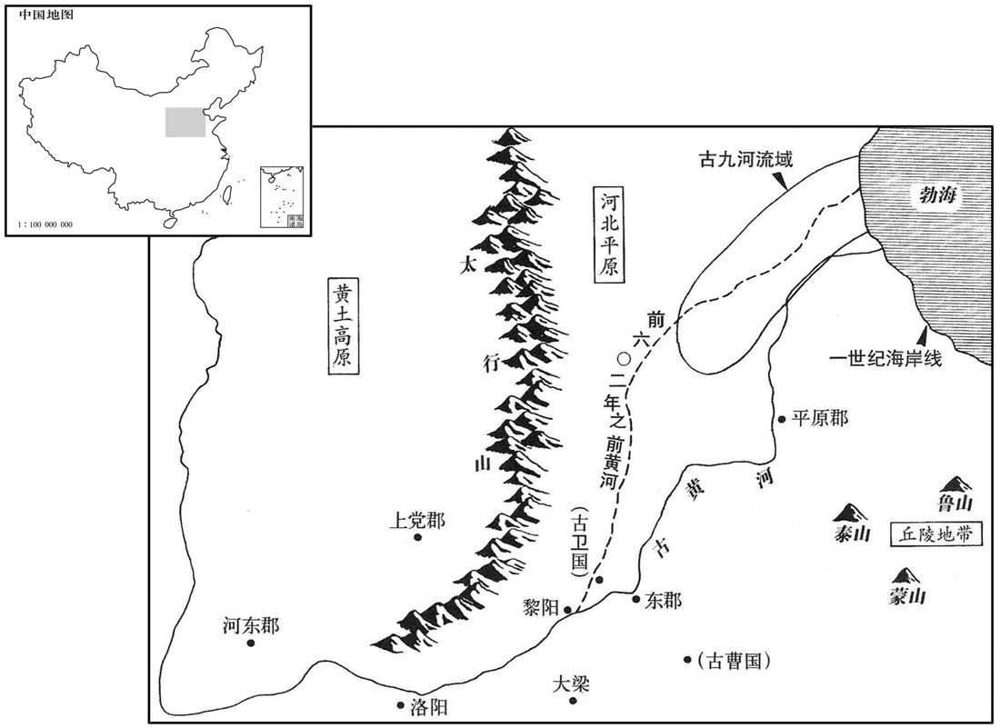
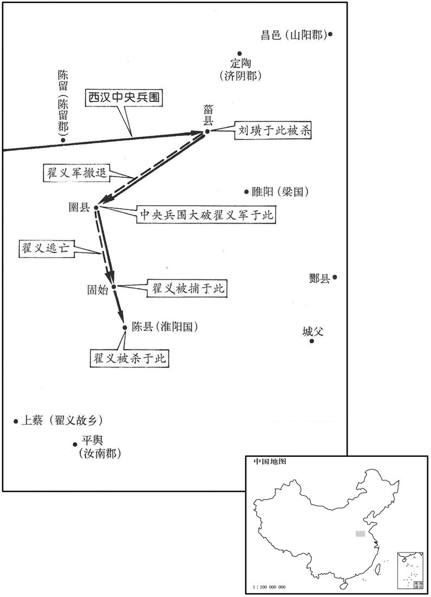
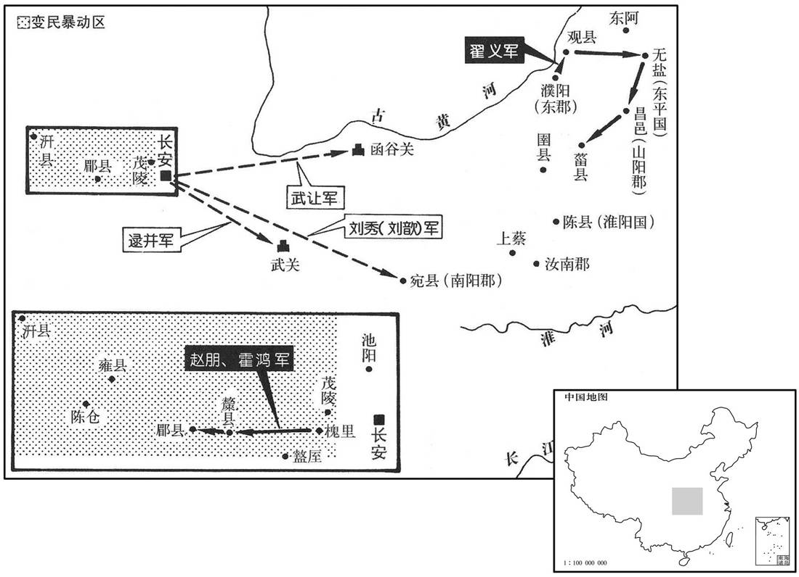

卷次与人物目录 / 卷36
资治通鉴 · 卷第三十六【汉纪二十八】
公元3年至公元8年 · 原文、白话与胡三省注
本页按胡注本编排保存全卷内容。白话采用本站所据译本，未可靠对应的内容另列说明；事件标题用于定位，并非原书文字。
本卷共69段原文，68段有译文对应，1段缺译或待核对。
卷第三十六【汉纪二十八】起昭阳大渊献（癸亥），尽着雍执徐（戊辰），凡六年。
卷首原文与注释
孝平皇帝下
公元3年 · 汉孝平皇帝元始三年
元始三年〔（癸亥、三）〕
上传原文的注释括号有异常，字符原样保留；无法可靠划分的段落默认全文显示。
本年事件索引（现代整理）
春，太后遣长乐少府夏侯藩、宗正刘宏、尚书令平晏纳采见女。〔婚有五礼，纳采、问名、纳吉、纳征、请期。陆德明曰：采，音七在翻，择也。师古曰：谓采择其可者。〕还，奏言：「公女渐渍德化，〔渐，音沾。〕有窈窕之容，〔窈窕，幽闲也。王肃曰：善心曰窈，善容曰窕。〕宜承天序，奉祭祀。」太师光、大司徒宫、大司空丰、左将军孙建、执金吾尹赏、行太常事、太中大夫刘秀及太卜、太史令服皮弁、素积，〔百官表：太常有太卜、太史等令。师古曰：皮弁，以鹿皮为冠，形如人手之弁合也。素积，调素裳也。朱衣而素裳。积，谓襞绩，若今之邝为也。邝，音雏恋翻。贤曰：素积者，积以为裳也，言要中辟积也。贾公彦曰：皮弁之服，十五升白布衣，积素以为裳。〕以礼杂卜筮，皆曰：「兆遇金水王相，卦遇父母得位，〔兆，卜也。卦，筮也。孟康曰：金、水相生也。张晏曰：金王则水相也。遇父母则泰卦，干下坤上，天下于地，是配享之卦。师古曰：王，音于放翻。原父曰：但言父母得位，安知是泰卦乎！相，息亮翻。〕所谓康强之占，逢吉之符也。」〔洪范曰：汝则从、龟从、筮从、卿士从、庶民从，是之谓大同，身其康强，子孙其逢吉。〕又以太牢策告宗庙。有司奏：「故事：聘皇后，黄金二万千，为钱二万万；」莽深辞让，受六千三百万，而以其四千三百万分予十一媵家及九族贫者。〔九族，上自高祖，下至玄孙之亲。按汉书王莽传：「故事聘皇后黄金二万斤，为钱二万万。莽深辞让，受四千万，而以其三千三百万予十一媵家。群臣复言：「今皇后受聘，踰群妾亡几。」有诏，复益二千三百万，为三千万。莽复以其千万分予九族贫者。又按杜佑通典：聘后黄金二万斤，汉吕后为惠帝聘鲁元公主故事也。予，读曰与。〕
春季，太皇太后王政君派长乐少府夏侯藩、宗正刘宏、尚书令平晏，前往王莽家，呈上礼物，并与王莽的女儿相见。回来后，向王政君奏报：“安汉公的女儿，受到最好的教育，有美丽善良的容貌，适宜承受天命，侍奉皇家宗庙祭祀。”太师孔光、大司徒马宫、大司空甄丰、左将军孙建、执金吾尹赏、行太常事太中大夫刘秀，以及太卜、卜史令，都戴上鹿皮帽，穿上素色衣裳，依照仪式，共同卜卦。都说：“这是金、水互相辅佐的吉兆，父母和睦喜悦的卦象。正是所谓康乐、强健的预示，子孙大吉的征兆。”接着，又用猪牛羊各一头祭祀，以策书禀告宗庙。主管官吏报告：“按照成例，聘皇后的彩礼是黄金二万斤，折合钱二万万。”王莽执意推辞，只愿接受钱六千三百万，而又在其中拨出四千三百万，分赠给被选为从嫁媵妾的十一家，以及王姓家九族以内的贫苦亲属。
夏，安汉公奏车服制度，吏民养生、送终、嫁娶，奴婢、田宅、器械之品，立官稷，〔元始元年，莽号安汉公。至是始书以冠事，表其所从来者渐矣。通鉴凡书权臣例始此。如淳曰：郊祀志：已有官社，未有官稷，遂立官稷于官社之后。臣瓒曰：汉初，除秦社稷，立汉社稷；其后又立官社，配以夏禹，而不立官稷。师古曰：淳、瓒二说皆未尽也。初立官稷于官社之后，是为一处。今更创置建于别所，不相从也。〕及郡国、县邑、乡聚皆置学官。〔张晏曰：聚，邑落名也。师古曰：聚，音才喻翻。〕
夏季，安汉公王莽奏报关于车马和衣服穿着的制度，全国官吏平民的日常生活，丧葬送终，男婚女嫁，以及奴婢的买卖和待遇，田地房产的转移，各种用具等等，分别定立等级。又设置祭祀五谷的神庙。并在各郡、各封国、各县、各城、各乡、各村，都设置学官。
大司徒司直陈崇使张敞孙竦草奏，〔师古曰：草，谓创立其文。〕盛称安汉公功德，以为：「宜恢公国令如周公，〔成王以周公有勋劳于天下，封以曲阜地方七百里。〕建立公子令如伯禽，〔鲁颂閟宫之诗曰：王曰叔父，建尔元子，俾侯于鲁。〕所赐之品亦皆如之，〔鲁公之封于鲁也，赐以附庸，殷民六族，大路，大旗，封父之繁弱，夏后氏之璜，祝、宗、卜、史，备物典策，官司彝器，白牡之牲，郊雍之礼。〕诸子之封皆如六子。」〔周公六子，封于凡、蒋、邢、茅、胙、祭。师古曰：六子，伯禽之弟也。祭，侧界翻。〕太后以示群公。群公方议其事，会吕宽事起。
大司徒司直陈崇，命张敞的孙儿张竦起草奏章，歌颂王莽的功德，说：“应该扩大安汉公的封国，让他象周公一样；赐封安汉公的长子，让他象伯禽一样，赏赐的等级也完全相同。其他儿子的封赏，都像周公的六个儿子一样。”太皇太后王政君把奏章交给大臣们看，大臣们正在讨论这件事，恰巧吕宽事件发生了。
初，莽长子宇非莽隔绝卫氏，〔隔绝事见上卷元年。长，知两翻。〕恐久后受祸，即私与卫宝通书，教卫后上书谢恩，〔上，时掌翻；下同。〕因陈丁、傅旧恶，冀得至京师。莽白太皇太后，诏有司褒赏中山孝王后，益汤沐邑七千户。卫后日夜啼泣，思见帝面，而但益户邑；宇复教令上书求至京师。〔复，扶又翻。〕莽不听。宇与师吴章及妇兄吕宽议其故，章以〔【章：甲十六行本「以」下有「为」字；乙十一行本同。】〕莽不可谏而好鬼神，〔好，呼到翻。〕可为变怪以惊惧之，章因推类说令归政卫氏。〔推类者，因变怪而推言事类如洪范五行传，以说莽也。说，输芮翻。〕宇即使宽夜持血洒莽第，门吏发觉之；莽执宇送狱，饮药死。宇妻焉怀子，〔师古曰：焉，其名。〕系狱，须产子已，杀之。〔师古曰：须，待也。已，讫也。〕甄邯等白太后，下诏曰：「公居周公之位，辅成王之主，而行管、蔡之诛，不以亲亲害尊尊，朕甚嘉之！」莽尽灭卫氏支属，唯卫后在。吴章要斩，磔尸东市门。〔要，与腰同。磔，陟格翻，裂也，张也。〕
当初，王莽的长子王宇反对王莽隔离卫姓家族，恐怕将来受到报复，便暗中跟卫宝通信，让卫后上书谢恩，并借机陈述丁姓家族和傅姓家族的罪恶，盼望被召到京师长安。王莽报告太皇太后，下诏让主管官吏褒扬赏赐卫后，增加汤沐邑七千户人家。卫后日夜哭泣，思念与平帝见面，然而只是增加了汤沐邑的户数。王宇再次教她上书要求前来京师探望。王莽不听。王宇与他的老师吴章和内兄吕宽商量这件事，吴章认为王莽不可规劝，但相信鬼神，可以制造怪异来恐吓他，再由吴章乘势推演，劝说他把政权移交卫姓家族。王宇便让吕宽于夜晚拿血涂洒王莽的住宅，守门的小吏发觉了这件事，王莽捉拿王宇送到牢狱里，令服毒药而死。王宇的妻子吕焉正怀孕，被囚禁在监狱里，等到生小孩后再杀掉。右将军甄邯等报告太皇太后，王政君下诏褒扬王莽：“阁下身居周公的地位，辅佐象周成王这样的幼主，而实施对管叔、蔡叔的诛杀，不以骨肉私情伤害君臣之间的大义，朕非常嘉勉这种大义灭亲的壮举。”王莽于是下令崐把卫姓家族全部屠杀，只留下卫后一人。吴章遭腰斩，在长安东市门施以分裂肢体的酷刑。
初，章为当世名儒，〔章治尚书经，为博士。〕教授尤盛，弟子千余人。莽以为恶人党，皆当禁锢不得仕宦，门人尽更名他师。〔师古曰：更以他人为师，讳不言是章弟子。更，工衡翻。〕平陵云敞时为大司徒掾，〔姓谱：侫，出自祝融之后，为侫国；后去邑为云。〕自劾吴章弟子，〔劾，户僙翻。〕收抱章尸归，棺敛葬之，〔师古曰：棺，音工唤翻。敛，音力赡翻。〕京师称焉。
原先，吴章是当时著名的儒家学派学者，广收学生，有千余人之多。王莽认为那些学生全是恶人的党徒，都应当禁锢起来，不得为官。学生们全都改换自己的身份，改投别的老师。平陵人云敞，当时任大司徒掾，上书自我弹劾，声称是吴章的学生，把吴章的尸体领回，买一口棺材收殓埋葬。长安人称道他的高义。
莽于是因吕宽之狱，遂穷治党与，连引素所恶者悉诛之。〔治，直之翻；下同。恶，乌路翻。〕元帝女弟敬武长公主素附丁、傅，〔长，知两翻。〕及莽专政，复非议莽；〔复，扶又翻。〕红阳侯王立，莽之尊属；〔立，莽叔父也。〕平阿侯王仁，素刚直；〔仁，谭子也。〕莽皆以太皇太后诏，遣使迫守，令自杀。〔使，疏吏翻；下同。令，力丁翻。〕莽白太后，主暴病薨；〔主，言敬武公主。〕太后欲临其丧，莽固争而止。甄丰遣使者乘传案治卫氏党与，〔传，知恋翻。〕郡国豪桀及汉忠直臣不附莽，〔【章：甲十六行本「莽」下有「者」字；乙十一行本同；孔本同。】〕皆诬以罪法而杀之。何武、鲍宣及王商子乐昌侯安、〔涿郡王商，相成帝者也。〕辛庆忌三子护羌校尉通、函谷都尉遵、水衡都尉茂、南郡太守辛伯皆坐死。〔何武不举莽为大司马。鲍宣素有强项名。王商与王凤不协，为所挤陷，忿毒而死；其子安不附王氏；辛庆忌本王凤所成，莽见其三子皆能，欲亲厚之；辛茂自以名臣子孙，兄弟并显列，不宜附莽，又不甚诎事甄丰、甄邯；伯亦辛氏之族：故并及祸。〕凡死者数百人，海内震焉。北海逢萌谓友人曰：「三纲绝矣，〔莽杀其叔父，又自杀其耱嫡，是灭其天性也；杀其君之祖姑，又尽除忠直之臣，是无君也；故曰三纲绝矣。逢，皮江翻。〕不去，祸将及人！」即解冠挂东都城门，〔萌时学于长安。贤曰：汉宫殿名：东都门，今名青门。注又见昭纪。〕归，将家属浮海，客于辽东。
王莽于是假借吕宽案件，下令追究吕宽党羽，牵连自己平素所厌恶的人，都予以诛杀。其中包括汉元帝的妹妹敬武长公主，她一向跟丁姓家族、傅姓家族友善，及至王莽专权，又非议王莽；王莽的亲叔父红阳侯王立，平阿侯王仁性格一向刚强正直；王莽都以太皇太后的名义，颁下诏书，并派使节监督，强迫他们自杀。王莽报告太皇太后说，敬武长公主患急病死亡。太皇太后要亲自前往祭悼，王莽竭力劝阻，才罢。大司空甄丰派遣专人，乘坐朝廷驿车，前往各地诛杀卫姓家族党羽。各郡、各封国的豪杰，跟汉王朝的忠臣义士，凡不顺附王莽的，都被诬陷有罪，依法处决。前任前将军何武、前任司隶校尉鲍宣，以及王商的儿子乐昌侯王安、前任左将军辛庆忌的三个儿子：护羌校尉辛通、函谷都尉辛遵、水衡都尉辛茂，以及南郡太守辛伯，全都被处死。共诛杀数百人，全国震惊。北海郡人逢萌对朋友说：“君臣、父子、夫妇之道都废绝了，再不离开，大祸临头。”说完就摘下帽子挂在东都城门，回到故乡，带着家属乘船渡海，到辽东客居。
莽召明礼少府宗伯凤〔宗伯，姓也。凤，名也。凤明于礼，官为少府。少，诗照翻。〕入说为人后之谊，白令公卿、将军、侍中、朝臣并听，〔说为人后者义不得顾私亲。师古曰：白令皆听之。朝，直遥翻。〕欲以内厉天子而外塞百姓之议。〔厉，讽厉也。厉者，磨错垢故以就新，取此义也。师古曰：塞，止也。塞，悉则翻。〕先是，秺侯金日磾子赏、都成侯金安上子常皆以无子国绝，〔先，悉荐翻。秺，音勡。磾，丁奚翻。〕莽以〔【章：甲十六行本「以」下有「日磾」二字；乙十一行本同；孔本同；张校同。】〕曾孙当及安上孙京兆尹钦绍其封。〔当，日磾曾孙也。〕钦谓「当宜为其父、祖立庙，〔晋灼曰：当是赏弟建之孙。此言当自为其父及祖父建立庙也。为，于伪翻。〕而使大夫主赏祭也。」〔【章：甲十六行本无「也」字；乙十一行本同；孔本「也」作「事」；张校同。〔如淳曰：以赏故国君，使大夫掌其祭事。臣瓒曰：当是支庶，上继大宗，不得顾其私亲也。而钦令尊其父、祖以续日磾，不复为赏后，而令大夫主掌祭事。师古曰：瓒说是。〕甄邯时在旁，廷叱钦，因劾奏「钦诬祖不孝，大不敬；」下狱，自杀。〔劾，户僙翻：下，遐稼翻。〕邯以纲纪国体，无所阿私，忠孝尤着，益封千户。更封安上曾孙汤为都成侯。汤受封日，不敢还归家，以明为人后之谊。
王莽征召深明古礼的少府宗伯凤，到宫廷讲解充任继承人的大义。建议由太皇太后下令，公卿、将军、侍中及文武百官，都要参加听讲。目的在于对内教训天子，对外消除百姓的议论。在此之前，侯金日的儿子金赏，都成侯金安上的儿子金常，都因为没有儿子，封国撤除。王莽命金日的曾孙金当，金安上的孙儿京兆尹金钦，分别继承爵位。金钦说：“金当应给他父亲、祖父建立祭庙，而派大夫主持伯祖父金赏的祭祀。”这时，甄邯正在旁边，当着平帝及文武百官，叱责金钦，弹劾他：“诬蔑祖先，不孝，犯大不敬之罪。”逮捕金钦，金钦在狱中自杀。甄邯因维护国家纲纪，不徇私情，忠孝双全，增加封地人家一千户。改封金安上的曾孙金汤当都成侯。金汤受封的当天，不敢回家，用以显示作为大宗继承人应遵循的大义。
是岁，尚书令颍川锺元为大理。〔哀帝元寿二年，复改廷尉为大理。〕颍川太守陵阳严诩〔地理志，陵阳县属丹阳郡。〕本以孝行为官，〔行，下孟翻。〕谓掾、史为师友，〔掾，俞绢翻。〕有过辄闭合自责，终不大言。郡中乱。〔史言世降俗薄，徒善不足以为政。〕王莽遣使征诩，官属数百人为设祖道，〔为，于伪翻。〕诩据地哭。掾、史曰：「明府吉征，不宜若此！」诩曰：「吾哀颍川士，身岂有忧哉！我以柔弱征，必选刚猛代；代到，将有僵仆者，〔师古曰：僵，偃也。仆，颠也。僵，音姜。仆，音赴。〕故相吊耳！」诩至，拜为美俗使者；〔文颖曰：宣美风化使者。〕徙陇西太守〔【章：甲十六行本「守」下有「平陵」二字；乙十一行本同；孔本同；张校同。】〕何并为颍川太守。并到郡，捕锺元弟威及阳翟轻侠赵季、李款，皆杀之；郡中震栗。〔地理志，阳翟县属颍川郡。翟，音直格翻。〕
本年，尚书令颍川人钟元，被任命为大理。颍川太守陵阳人严诩，当初，以对父母的孝顺行为而被推荐当官，他把掾、史等属官当作教师或朋友，崐遇到过错，就关起来门来，自我责备，从来没有大声说过话。后来，郡中大乱，王莽派使节征召严诩，郡府官吏数百人，设宴给严诩饯行，严诩坐着以手按地大哭，官吏们说：“朝廷征召明府君，这对明府君来说是一件喜事，不应该这么悲伤。”严诩说：“我为颍川人悲伤，岂是为我自己忧愁？我因为柔弱的原因被调走，必选强硬猛烈的人代替我。代替我的人到了，必然有人身死，所以我才悲伤。”严诩到了京师，王莽任命他当美俗使者，改任陇西太守。何并接任颍川太守，他一到任，就逮捕钟元的弟弟钟威及阳翟侠士赵季、李款，一齐诛杀，全郡深为恐惧。
公元4年 · 汉孝平皇帝元始四年
四年〔（甲子、四）〕
上传原文的注释括号有异常，字符原样保留；无法可靠划分的段落默认全文显示。
本年事件索引（现代整理）

本年形势与背景参考图
春，正月，郊祀高祖以配天，宗祀孝文以配上帝。〔师古曰：郊祀，祀于郊也。宗，尊也，祀于明堂也。上帝，太微五帝也；一曰：昊天上帝也。王肃曰：上帝，天也。马融曰：上帝，泰一之神，在紫微宫，天之最尊者。杜佑曰：元气广大则称昊天；人之所尊莫过于帝，托之于天，故称上帝。〕
春季，正月，平帝在长安郊外用祭祀天地之礼祭祀高祖，以配享上天；在明堂用祭祀祖宗之礼祭祀文帝，以配享上帝。
改殷绍嘉公曰宋公，周承休公曰郑公。〔成帝绥和元年，封殷绍嘉公，进周承休侯爵为公，为二王后。〕
改封殷绍嘉公为宋公、周承休公为郑公。
诏：「妇女非身犯法，及男子年八十以上、七岁已下，家非坐不道、诏所名捕，〔张晏曰：名捕，谓下诏所特捕也。〕他皆无得系；其当验者即验问。〔师古曰：就其所居而问。〕定着令！」
平帝下诏：“妇女除非本人犯法，以男子八十岁以上、七岁以下，其家除非被指控为大逆不道，或朝廷指名逮捕，一概不准囚禁。必须调查时，官员应到妇女或老幼所住的地方调查，本诏书自即日起成为法律。”
二月，丁未，遣大司徒宫、大司空丰等奉乘舆法驾迎皇后于安汉公第，授皇后玺绂，〔乘，绳证翻。续汉志：皇后绶，与乘舆同，四采黄、赤、缥、绀，长丈九尺九寸，五百首。玺，盖亦玉玺也。师古曰：绂，所以系玺，音弗。考异曰：王莽传云「四月，丁未」，平纪云「二月，丁未，立皇后王氏」，下云「夏，皇后见于高庙」。外戚传云明年春，迎皇后于安汉公第。然则言四月者误也。〕入未央宫。大赦天下。
二月丁未（初七），派大司徒马宫、大司空甄丰等，带着御用车轿跟皇家仪仗队，前往安汉公王莽家宅，迎接王莽的女儿，呈上皇后印信，将她载回未央宫。大赦天下。
遣太仆王恽等八人各置副，假节，〔副，副使也。恽等持节，其副则假之以节。恽，于粉翻。〕分行天下，〔行，下孟翻。〕览观风俗。
派太仆王恽等八人为使节，各人再设副手，持节，分别巡视全国各地，考察社会风俗。
夏，太保舜等及吏民上书者八千余人，咸请「如陈崇言，加赏于安汉公。」章下有司，〔下，遐稼翻；下同。〕有司请「益封公以召陵、新息二县及黄邮聚、新野田；〔新息、召陵二县，属汝南郡。续汉志，南阳郡新野县有东乡，故新都，王莽所封也；又有黄邮聚。聚，才谕翻。〕采伊尹、周公称号，加公为宰衡，〔伊尹曰阿衡，周公位耱宰。称，尺证翻。〕位上公，三公言事称『敢言之』；赐公太夫人号曰功显君；〔莽母也。〕封公子男二人安为褒新侯，临为赏都侯；〔莽封新都侯，析其国名二字，加「褒」、「赏」，以封其二子。〕加后聘三千七百万，合为一万万，以明大礼；太后临前殿亲封拜，安汉公拜前，二子拜后，如周公故事。」〔成王之侯伯禽于鲁也，周公拜前，鲁公拜后。〕莽稽首辞让，〔稽，音启。〕出奏封事：「愿独受母号，还安、临印韨及号位户邑。」〔韨，即绂；音弗。〕事下，〔下，遐稼翻。〕太师光等皆曰：「赏未足以直功；〔师古曰：直，当也。〕谦约退让，公之常节，终不可听。忠臣之节亦宜自屈，而伸主上之义。宜遣大司徒、大司空持节承制诏公亟入视事；诏尚书勿后受公之让奏。」〔复，扶又翻；下同。〕奏可。莽乃起视事，止减召陵、黄邮、新野之田而已。
夏季，太保王舜等以及官民八千余人上书朝廷，一致请求：“请按照大司徒司直陈崇的建议，增加对安汉公王莽的赏赐。”奏章交给主管官吏，主管官吏奏报：“增加安汉公王莽的封地，把召陵、新息二县，跟黄邮聚、新野两地的耕田全都划入。采用伊尹和周公的称号，给安汉公加上宰衡的官号，位居上公。三公向安汉公报告工作，自称‘冒昧陈辞’。封王莽的母亲为功显君，封王莽的两个儿子王安为褒新侯，王临为赏都侯。增加皇后彩礼三千七百万钱，合成一万万钱，用来表明礼仪的隆重。太皇太后来到前殿，亲自赐封爵位和称号。王莽在前面下拜，两个儿子在后面下拜，一如周公的旧例。”王莽叩头辞让，出宫以后送上密封的奏章，说：“仅愿接受对我母亲的封号，而退还王安、王临的印玺绶带和爵位称号、封邑民户。”太师孔光等都说：“赏赐不足以抵过功劳，谦虚辞让是安汉公的一贯作风，到底不可以听从。忠臣的气节有时应该自己屈服，使主上的大义得以伸张。应该派遣大司徒、大司空拿着符节，奉皇帝命令征召安汉公赶快入宫主持朝政。并下令尚书，拒绝接受安汉公任何推辞退让的奏章。”奉章被批准了。王莽这才起来办理公务，仅减少召陵、黄邮聚、新野三地的封土罢了。
莽复以所益纳征钱千万遗太后左右奉共养者。〔遗，于季翻；下同。白虎通曰：纳征用玄纁。共，居用翻。养，弋向翻。〕莽虽专权，然所以诳耀媚事太后，下至旁侧长御，方故万端，赂遗以千万。数白尊太后姊、妹号皆为君，食汤沐邑。〔姊君挟为广恩君，君力为广惠君，君弟为广施君。〕以故左右日夜共誉莽。〔誉，音余。〕莽又知太后妇人，厌居深宫中，莽欲虞乐以市其权，〔乐，音洛。〕乃令太后四时车驾巡狩四郊，〔张晏曰：市权者，以游观之乐易其权，若市贾然。师古曰：虞，与娱同。邑外谓之郊，近二十里也。仲冯曰：言郊，不必二十里也。〕存见孤、寡、贞妇，所至属县，辄施恩惠，赐民钱帛、牛酒，岁以为常。太后旁弄儿病，在外舍，〔服虔曰：官婢、侍史生儿，取以作弄儿也。〕莽自亲候之。其欲得太后意如此。
王莽又在所增加彩礼的三千七百万中，提出一千万，送给太皇太后左右侍从人员。王莽虽然独裁，但他千方百计迷惑诌媚取悦太皇太后，甚至太皇太后身旁那些常侍的随从，都使用多种方法，致送数以千万计的贿赂。又建议封太后的姐、妹为君，各有汤沐邑。因此，太皇太后身旁的人日夜共同赞美王莽。此外，王莽知道，太皇太后仍是一个女人，厌恶居住在深宫之中。他打算用娱乐换取在太后手里的权力，于是，春夏秋冬四季，都请太后到长安四郊游览，慰问孤儿、寡妇和贞妇。所到长安各属县，都布施恩惠，赏赐平民钱币、丝织品、牛肉、美酒，每年都是如此。太后身旁供支使的小子有病，王莽亲自前往探望。王莽想得到太后的好感，所用手段大致类此。
太保舜奏言：「天下闻公不受千乘之土，〔古者诸公之国，地方百里，出兵车千乘。〕辞万金之币，〔谓聘后之币也。〕莫不乡化。〔乡，读曰向。〕蜀郡男子路建等辍讼，惭怍而退，虽文王却虞、芮何以加！〔师古曰：却，退也。虞、芮，二国名也，并在河之东。二国之君争田不平，闻文王之德，乃往断焉；入周之竟，则耕者让畔，行者让路，乃相谓曰：「我小人也，不可以履君子之庭！」遂相让，以其所争为闲田而退。怍，才各翻。〕宜报告天下。」〔【章：甲十六行本「下」下有「奏可」二字；乙十一行本同；孔本同；张校同。】〕于是孔光愈恐，固称疾辞位。太后诏：「太师毋朝，〔朝，直遥翻。〕十日一入省中，置几杖，赐餐十七物，然后归；官属按职如故。」〔师古曰：餐具有十七种物，言十日一入朝，受此宠礼，他日则常在家自养；而其属官依常各行职务。〕
太保王舜奏报：“全国百姓听到安汉公不接受相当于可以出一千辆兵车的国家的封地，推辞万斤黄金的彩礼，没有人不仰慕。蜀郡男子路建等人停止诉讼，惭愧地回去了，就是周文王感化虞君、芮君，让他们自动停止争执返回本国，也不能超过安汉公！应当把这些事情宣告全国。”当时太师孔光愈来愈恐惧，声称有病，坚决辞职。太后下诏：“太师不必再参加朝会，只要每隔十天入宫一次就可以了。宫廷当为你置备几案手杖，赏赐吃十七种食物，然后再回家；太师府的属官各行其职如故。”
莽奏起明堂、辟雍、灵台，〔应劭曰：明堂所以正四时，出教化。明堂上圆下方，八窗四达，布政之宫，在国之阳：上八窗八风，四达法四时，九室法九州岛，十二重法十二月，三十六户法三十六雨，七十二牖法七十二风。黄帝曰合宫，有虞曰总章，殷曰阳馆，周曰明堂。辟雍者，象璧；圜之以水，象教化流行。大戴礼：明堂，以茅盖，上圆下方。天子曰灵台，诸侯曰观台，以望气，书云物。〕为学者筑舍万区，〔为，于伪翻。〕制度甚盛。立乐经；益博士员，经各五人。征天下通一艺、教授十一人以上，及有逸礼、古书、天文、图谶、〔张衡曰：图谶虚妄，非圣人之法。刘向父子领校秘书，阅定九流，亦无谶录；成、哀之后，乃始闻之。〕锺律、月令、兵法、史篇文字，〔孟康曰：史籀所作十五篇古文书也。师古曰：周宣王太史史籀所作大篆书也。籀，直救翻。〕通知其意者，皆诣公交车。网罗天下异能之士，前后至者千数，皆令记说廷中，将令正乖谬，壹异说云。〔令各造廷中而记其说也。〕
王莽提议兴建明堂、辟雍和灵台，给学者建筑宿舍一万间，规模十分宏伟。在太学设立《乐经》课程，并增加博士名额，每一经各五人。征求全国精通一经，而且教授弟子十一人以上的经师，以及藏有散失的《礼经》、古文《尚书》、天文、图谶、音乐、《月令》、《兵法》、《史籀篇》文字，通晓它们意义的人，都前往公车衙门。收罗全国具有卓越才能的士人，来到京师的前后数以千计，都让他们到朝廷上记录他们的学说，打算让他们订正流传的错误，统一各种分歧的说法。
又征能治河者以百数，〔治，直之翻。〕其大略异者，长水校尉平陵关并〔姓谱：关，夏大夫关龙逢之后。风俗通：关令尹喜之后。〕言：「河决率常于平原、东郡左右，其地形下而土疏恶。〔疏，音捤。〕闻禹治河时，本空此地，以为水猥盛则放溢，少稍自索，〔少，诗沼翻。师古曰：猥，多也。索，尽也，音先各翻。〕虽时易处，犹不能离此。〔离，力智翻。〕上古难识。近察秦、汉以来，河决曹、卫之域，〔汉之济阴、定陶，故曹国也。东郡及魏郡黎阳，古卫地也。〕其南北不过百八十里。可空此地，勿以为官亭、民室而已。」御史临淮韩牧以为：「可略于禹贡九河处穿之，纵不能为九，但为四、五，宜有益。」大司空掾王横言：「河入勃海地，高于韩牧所欲穿处。往者天常连雨，东北风，海水溢，西南出，寖数百里，九河之地已为海所渐矣。〔师古曰：渐，寖也，读如本字，又音子廉翻。〕禹之行河水，本随西山下东北去。〔师古曰：行，谓通流也。〕周谱云：『定王五年，河徙，』〔如淳曰：谱，音补，世统谱谍也。〕则今所行非禹之所穿也。又秦攻魏，决河灌其都，〔事见七卷秦始皇二十二年。〕决处遂大，不可复补。〔复，扶又翻。〕宜却徙完平处更开空，〔空，音孔。师古曰：空，犹穿。〕使缘西山足，乘高地而东北入海，乃无水灾。」〔西山，谓黎阳以西诸山。〕司空掾沛国桓谭典其议，为甄丰言：〔为，于伪翻；下同。〕「凡此数者，必有一是；宜详考验，皆可豫见。计定然后举事，费不过数亿万，亦可以事诸浮食无产业民。〔师古曰：事，谓役使也。〕空居与行役，同当衣食，衣食县官而为之作，乃两便，〔师者曰：言无产业之人，端居无为及发行力役，俱须衣食耳。今县官给其衣食而使修治河水，是为公私两便也。〕可以上继禹功，下除民疾。」时莽但崇空语，无施行者。
王莽又征求能够治理黄河的人才以百计算，各人的主张并不相同。长水校尉平陵人关并认为：“黄河溃决的地点，经常在平原、东郡左右，那一带地势低下，土质松软。据说夏禹治理黄河时，原本把这一带地区空出来，认为水大时就到那里倾泄，水小时自会逐渐干涸。虽然时常改变地方，但还没能离开这一带。上古时代往事，难以考察。考察近代秦、汉以来的状况，黄河在古曹国、古卫国的地域决口，南北相距不过百八十里。可以把这一带腾空，不再兴建官亭、民居罢了。”御史临淮人韩牧认为：“《禹贡》有九条河流的记载，我崐们应大略地在故道上挖掘，即令不能凿出九条河流，只要能开凿四五条，应该也有裨益。”大司空掾王横进言：“黄河注入渤海的出口，比韩牧打算挖掘地带的地势要高。过去，降雨频繁，东北风起，海水倒灌，黄河向西南倒流，淹没数百里，古九河的故道，早就被海水吞没了。禹当初疏通黄河，本来是要顺着西山，流向东北。《周谱》说：‘周定王五年黄河改道。’说明今天的黄河，并非禹当年挖掘的故河道。还有，秦国攻击魏国时，决开黄河堤岸，用河水灌入魏国京都大梁，决口于是扩大，无法再次堵塞。所以，应把平地的百姓全部迁移，重新开凿河道，使河水顺着西山脚下，居高临下，向东北注入大海，就没有水患了。”大司空掾沛国人桓谭，主持这项讨论，向少傅甄丰说：“这几项建议中，肯定有一个是对的。应详细考察，都可以预先发现。计划既定而后行动，费用不过数亿万，而且可以使一些无产业的游民找到工作。他们闲着不事生产，与他们参与劳动，同样都需要那么多衣服和粮食。由国家供应他们的衣食，而他们为国家劳作，这对两方面都有好处。这样上可以继承禹的大业，下可以为人民除害。”然而，当时王莽崇尚的只是空话，并没有具体施行。
群臣奏言：「昔周公摄政七年，制度乃定。今安汉公辅政四年，营作二旬，大功毕成，宜升宰衡位在诸侯王上。」诏曰：「可。」仍令议九锡之法。〔应劭曰：九锡：一曰车马，二曰衣服，三曰乐器，四曰朱户，五曰纳陛，六曰虎贲百人，七曰鈇钺，八曰弓矢，九曰秬鬯。此皆天子制度，尊之，故事事锡与，但数少耳。张晏曰：九锡，经本无文；周礼以为九命，春秋说有之。臣瓒曰：九锡备物，霸者之盛礼，齐桓、晋文犹不能备。郑玄曰：按九锡之名，古无有也。王制：三公一命衮；若有加，则赐也不过九命。孔颖达曰：郑意以为九命之外，别加九赐。案礼纬含文嘉，上列九锡之差，下云四方所瞻之成，侯子所望。宋均注云：九赐者，乃四方所共见，公侯伯子男所希望。孔引含文嘉所谓九锡，与应劭同，独乐器曰乐则耳。宋均注云：进退有节，行步有度，赐之车马以代其步。言成文章，行成法则，赐之衣服以表其德。长于教训，内怀至仁，赐之乐则以化其民。居处修理，房内不渫，赐之朱户以明其别。动作有礼，赐之纳陛以安其体。勇猛劲疾，执义坚强，赐之虎贲以备非常。亢扬威武，志在宿卫，赐之斧钺使得专杀。内怀仁德，执义不倾，赐之弓矢使得专征。孝慈父母，赐之秬鬯以事先祖。〕
文武百官奏称：“从前，周公代周成王处理国政七年，国家的制度才厘订妥当。而今，安汉公辅助国政四年，修建明堂等用了二十天，却大功全部完成。所以，应该把宰衡的地位，提高到侯爵亲王之上。”下诏说：“可以。”同时下令讨论九锡之法。
莽奏尊孝宣庙为中宗，孝元庙为高宗；又奏毁孝宣皇考庙勿修；〔宣帝元康元年尊悼园曰皇考。〕罢南陵、云陵为县。〔南陵，文帝母薄太后陵。云陵，昭帝母赵太后陵。〕奏可。
王莽奏请：将宣帝祭庙尊为中宗，元帝祭庙尊为高宗。又奏请：废弃刘询父亲刘据祭庙，不再修建；撤销南陵、云陵，改成两个普通县。下诏批准。
莽自以北化匈奴，东致海外，南怀黄支，〔莽自奏曰：越裳氏重译献白雉；黄支自三万里贡生犀；东夷王渡大海，奉国珍；匈奴单于顺制作，去二名。〕唯西方未有加，乃遣中郎将平宪等多持金币诱塞外羌，使献地愿内属。宪等奏言：「羌豪良愿等种可万二千人，愿为内臣，〔种，章勇翻。〕献鲜水海、允谷、盐池，〔地理志，金城郡临羌县西北至塞外，有西海、盐池。阚骃云：西有卑禾羌海，即献王莽地为西海郡者也。郦道元曰：世谓之青海，东去西平二百五十里。〕平地美草，皆与汉民；自居险阻处为藩蔽。问良愿降意，〔降，户江翻。〕对曰：『太皇太后圣明，安汉公至仁，天下太平，五谷成孰，或禾长丈余，〔长，直亮翻。〕或一粟三米，或不种自生，或疬不蚕自成；甘露从天下，醴泉自地出；凤皇来仪，神爵降集。从四岁以来，〔谓自莽辅政以来也。〔羌人无所疾苦，故思乐内属。』宜以时处业，〔处，谓度地以处之。业，谓使各有作业也。乐，音洛。处，昌吕翻。〕置属国领护。」事下莽，莽复奏：〔下，遐稼翻。〕「今已有东海、南海、北海郡，请受良愿等所献地为西海郡。分天下为十二州，应古制。」奏可。冬，置西海郡。〔考异曰：王莽传，置西海郡在明年秋；今从平纪。〕又增法五十条，犯者徙之西海。徙者以千万数，民始怨矣。
王莽自以为他的德威，北边感化了匈奴，东边招来了海外国家，南边怀柔了黄支，只有西边没有施加影响。便派遣平宪等人多多携带金钱礼物，去招引边界以外的羌人，使他们献出土地，归属汉朝。平宪等人奏报说：“羌人以良愿等为首的部落，人口约一万二千，愿意成为汉朝的臣民，献出鲜水海和允谷、盐池，该地区地平草茂，都交给汉朝百姓，自己住到险阻之处，作为汉朝的屏障。我们询问良愿归降的用意，他回答说：‘太皇太后圣明，安汉公最仁慈，天下太平，五谷成熟，有的禾苗长到一丈多长，有的一粒谷子包含三粒米，有的不须种植自己生长，有的茧不要蚕吐丝就可以自织而成，甘露从天上降下，甘泉从地下涌出，凤凰前来朝贺，神雀飞临聚集。四年来，羌人没有遭遇过艰难困苦，所以希望并喜欢归属汉朝。’应及时安排他们的生产和生活，设置属国统辖保护他们。”事情交给王莽处理，王莽回奏说：“现在已有东海郡、南海郡、北海郡，请接受良愿等所献土地设置西海郡。全国分为十二州，以符合古代制度。”平帝批准。冬季，设置西海郡。又增订法律五十条，违犯者被流放到西海郡去。被流放的人数以千万，百姓开始怨恨了。
梁王立坐与卫氏交通，废，徙南郑；自杀。〔卫氏，帝外家也。〕
梁王刘立被指控跟卫姓家族勾结，废去王位，放逐到南郑。刘立自杀。
分京师置前辉光、后丞烈二郡。〔前辉光盖领长安以南诸县，后丞烈盖领长安以北诸县也。〕更公卿、大夫、八十一元士官名、位次及十二州名。〔更，工衡翻。〕分界郡国所属，罢置改易，天下多事，吏不能纪矣。
分割京师长安，设置前辉光郡、后丞烈郡。更改公卿、大夫、八十一元士官名、等级以及十二州州名、分界。更改各郡、各封国的管辖区域，或取消崐，或新设，或变更，从此天下事端增多，官吏记不胜记。
公元5年 · 汉孝平皇帝元始五年
五年〔（乙丑、五）〕
上传原文的注释括号有异常，字符原样保留；无法可靠划分的段落默认全文显示。
本年事件索引（现代整理）
- 王莽举行明堂大祭，厚赏诸侯宗室
- 王莽恢复长安南北郊祭祀，三十余年天地祭所屡迁
- 王莽命各郡国设置宗师管理宗室子弟
- 孔光去世，王莽以马宫继任太师
- 数十万人请加封王莽，王莽再辞后获准主持礼乐制度
- 王莽接受九锡，位望与周公相当
- 王恽等伪造歌谣颂扬王莽，受封列侯
- 王莽制定市无二价、路不拾遗等理想化禁令
- 王莽强令掘毁共王母、丁姬陵寝，傅氏旧臣遭流放
- 师丹获赐侯爵后去世
- 马宫追悔曾附和傅太后谥号，辞去太师职务
- 王莽为打通长安至汉中的通道，开凿子午道
- 刘庆请王莽代行天子职权，群臣附议
- 王莽毒杀孝平帝，改尊其庙号并命官员服丧
- 班固指出王莽表彰功德掩饰不了天象示警与民怨
- 平晏任大司徒
- 王莽嫌宣帝诸曾孙年长，遍征幼童择立嗣君
- 王莽伪造符命称天授帝位，太后被迫准其居摄
- 王莽奏请以居摄礼仪临朝，群臣称其为摄皇帝
春，正月，祫祭明堂；〔应劭曰：礼，五年而再殷祭，壹禘壹祫。祫祭者，毁庙之主皆合食于太祖。师古曰：祫，音合。〕诸侯王二十八人，列侯百二十人，宗室子九百余人，征助祭。礼毕，皆益户、赐爵及金帛、增秩、补吏各有差。〔已封者益户，未有爵者赐爵，已有爵者赐金帛，已有秩者增秩，未有官者补吏。〕
春季，正月，平帝在明堂对远近祖先进行大合祭。受征助祭的有诸侯王二十八人，列侯一百二十人，皇家子弟九百余人。典礼完毕，全部增加封地户数，赐封爵位，赏赐金银、丝织品，提高俸禄，任命当官，各有差别。
安汉公又奏复长安南、北郊。三十余年间，天地之祠凡五徙焉。〔成帝建始元年罢甘泉泰畤、汾阴后土祠，作长安南、北郊；永始三年，复甘泉、汾阴；成帝崩，皇太后诏复长安南、北郊；哀帝建平三年，复甘泉、汾阴；今又复南、北郊；是五徙也。〕
安汉公王莽再奏请：恢复长安南郊祭天，北郊祭地大典。三十余年间，祭祀天地的地方已经变更了五次。
诏曰：「宗室子自汉元至今十余万人，其令郡国各置宗师以纠之，〔汉元，汉初也。师古曰：纠，谓禁察也。〕致教训焉。」
平帝下诏：“自从汉王朝建立迄今，皇家子弟已有十余万人。各郡、各封国，应设置宗师，负责纠察训导皇家子弟。”
夏，四月，乙未，博山简烈侯孔光薨，赠赐、葬戏甚盛，车万余两。〔两，音亮。〕以马宫为太师。
夏季，四月乙未（初一），太师、博山侯孔光去世。赐赠丰厚，葬礼十分盛大，送葬的车就有一万多辆。任命马宫当太师。
吏民以莽不受新野田而上书者前后四十八万七千五百七十二人，及诸侯王公、列侯、宗室见者〔见，贤遍翻。〕皆叩头言：「宜亟加赏于安汉公。」于是莽上书言：「诸臣民所上章下议者，事〔【章：乙十一行本「事」作「愿」；孔本同。甲十六行本「事」作「以」。】〕皆寝勿上，〔上，时掌翻。下，遐稼翻。〕使臣莽得尽力异制礼作乐；事成，愿赐骸骨归家，避贤者路。」〔言久处大位，妨贤者进用之路。避位，所以避贤者路也。〕甄邯等白太后，诏曰：「公每见辄流涕叩头言，愿不受赏；赏即加，不敢当位。方制作未定，事须公而决，故且听公制作；毕成，群公以闻，究于前议。〔师古曰：究，竟也。〕其九锡礼仪亟奏！」
官吏、平民因为王莽不接受新野县的田地而上书的，前后达四十八万七千五百七十二人，以及诸侯王、公卿、列侯和皇族被接见的，都叩头说：“应该赶快对安汉公加以奖赏。”于是王莽上书说：“官民所上奏章交下来讨论的，应全部搁置不再呈上，使我得以尽力完成制作礼仪和乐章。等到制作完成，我愿退休返回故乡，避开贤能人才上进的道路。”右将军甄邯等奏报太皇太后，太皇太后下诏给王莽：“安汉公每次进见，都流着眼泪，叩头陈情，不愿接受奖赏。如果加以奖赏，您就不敢处在高位。现在制作礼乐制度的工作没有完成，这件大事，必须靠您决定，所以暂且由您制作礼乐。等工作完成，群臣报告之后，再研究大家从前的建议。但关于九锡礼仪，仍要迅速制定奏报。”
五月，策命安汉公莽以九锡，莽稽首再拜，受缘韨，衮冕，衣裳，〔师古曰：此韨，谓蔽膝也。或谓韨坆。韨，音弗；坆，音毕。〕玚琫、玚珌，〔孟康曰：玚，玉名也。佩刀之饰，上曰琫，下曰珌。诗云，鞞琫有珌是也。毛传曰：鞞，容刀鞞也。琫，上饰；珌，下饰。天子玉琫而珧珌；诸侯璗琫而璆珌。陆云：鞞，刀室也。琫，佩刀削上饰；珌，佩刀下饰。尔雅云：黄金谓之璗。说文云：璗，金之美与玉同色者也。师古曰：玚，音荡。琫，音布孔翻。珌，音必。〕句履，〔孟康曰：今齐祀履头饰也，出履三寸。师古曰：其形岐头。句，音巨俱翻。〕鸾路、乘马，〔师古曰：鸾路，车之施鸾者也。四马曰乘，音食证翻。〕龙旗九旒，〔周礼：交龙为旗。尔雅：有铃曰旗。旒，旗之末垂也。〕皮弁、素积，戎路、乘马，〔师古曰：戎路，戎车也。彤弓矢、卢弓矢，〔师古曰：彤，赤色。卢，黑色。〕左建朱钺，右建金戚，〔师古曰：钺、戚，皆斧属。〕甲、冑一具，〔冑，兜鍪。〕秬鬯二卣，〔秬鬯，香酒也。周礼春官鬯人注云：酿秬为酒；秬如黑黍，一稃二米。陆田埤雅曰：说文：鬯以秬酿，郁草芬芳，攸服以降神也。旧说：芬芳条畅，故谓之鬯；礼以郁合鬯，言郁于中而鬯于外也。又曰：先郑、小毛以为鬯，香草也，筑而煮之为鬯。秬者，百谷之华，鬯者，百草之英，故先王煮以合鬯。卣，中樽也。秬，音巨。卣，音攸，又音羊久翻。〕圭瓒二，九命青玉珪二，〔师古曰：圭瓒，以圭为勺末。上公九命，青者春色，东方生而长育万物也。〕朱户，纳陛，〔朱户以居，纳陛以登。孟康曰：纳，内也，谓凿殿基际为陛，不使露也。师古曰：孟说是也。尊者不欲露而升陛，故纳之于溜下也。〕署宗官、祝官、卜官、史官，〔放周公也。成王之命周公，祝、宗、卜、史。杜预曰：太祝、宗人、太卜、太史，凡四官。〕虎贲三百人。〔孔安国曰：虎贲，勇士称也。若虎贲战，言其猛也。贲，音奔。〕
两版字句有差异，建议核对原文。
五月，颁策书加赐王莽九锡，王莽叩头再拜，接受了绿色的蔽膝和龙冠、礼服，用金玉装饰的佩刀，鞋头突出的履，有铃大车和套马，装饰着九束绦子的大龙旗，皮帽子和细褶白布衫，军车和套马，红色的弓和箭，黑色的弓和箭，立在左边的红色钺斧，立在右边的有金饰的戚斧，铠甲和头盔一套，美酒二卣，玉勺两只，九级青玉两枚，规定家里可以安装红漆大门和修建檐内台阶。设置宗官、祝官、卜官、史官，拥有护卫勇士三百人。
王恽等八人使行风俗还，〔恽，于粉翻。行，下孟翻；下同。〕言天下风俗齐同，诈为郡国造歌谣、颂功德，凡三万言。闰月，丁酉，诏以羲和刘秀等四人使治明堂、辟雍，〔治，直之翻。〕令汉与文王灵台、周公作洛同符。〔诗曰：经始灵台，经之营之，庶民攻之，不日成之。周公营成周，曰：其作大邑，其自时配皇天中乂。〕太仆王恽等八人使行风俗，宣明德化，万国齐同，皆封为列侯。〔四人者，刘秀，红休侯；平晏，防乡侯；孔永，宁乡侯；孙迁，定乡侯。八人者，王恽，常乡侯；阎迁，望乡侯；陈崇，南乡侯；李翕，邑乡侯；郝党，亭乡侯；谢殷，章乡侯；逯普，蒙乡侯；陈凤，卢乡侯。考异曰：恩泽侯表，刘歆等十一侯皆云丁酉，独平晏云丁丑。按十二人同功俱封，是年闰五月甲午朔，无丁丑，表误。〕
王恽等八位使者考察风俗回京，说全国风俗整齐划一，并编造各地民歌民谣，颂扬功德，共有三万字。闰月丁酉（初四），平帝下诏命羲和刘秀等四人，负责兴建明堂、辟雍，使汉朝的土木工程，跟周朝文王兴建灵台、周公兴建洛阳城相符。太仆王恽等八人，周游全国，考察风俗，宣扬阐明朝廷的恩德教化，使风俗整齐划一。刘秀等四人和王恽等八人，全封列侯。
莽又奏为市无二贾，〔师古曰：言纯质也。贾，读曰价。〕官无狱讼，邑无盗贼，野无饥民，道不拾遗，男女异路之制；犯者象刑。〔师古曰：白虎通云：象者，其衣服象五刑也。犯墨者蒙。犯劓者以赭着其衣。犯髌者以墨蒙其髌，象而画之。犯宫者屝。犯大辟者布衣无领。屝，草屦也。膑，音频忍翻。屝，音扶味翻。〕
王莽又奏报说，做买卖没有两样价格，官府没有诉讼案件，城市没有盗贼，乡野没有饥民，大路上没有人拾取丢下的财物，实行男女不一同走路的制度，对于违犯者处予象征性刑罚。
莽复奏言：「共王母、丁姬，前不臣妾，〔师古曰：言不遵臣妾之道。复，扶又翻。，共，音恭。〕耱高与元帝山齐，〔贾公彦曰：尔雅「山顶，耱」，则山耱之耱；封土为丘曰耱，则耱墓之耱。耱，知陇翻。〕怀帝太后、皇太太后玺绶以葬。〔师古曰：怀，谓挟之以自随也。玺，斯氏翻。绶，音受。〕请发共王母及丁姬耱，取其玺绶；徙共王母归定陶，葬共王耱次。」太后以为既已之事，不须复发。〔复，扶又翻。〕莽固争之，太后诏因故棺改葬之。莽奏：「共王母及丁姬棺皆名梓宫，珠玉之衣，〔谓之梓宫者，以香梓为之，言犹生时所居宫室也。珠玉之衣，珠襦玉匣也。〕非藩妾服。请更以木棺代，〔更，工衡翻；下同。〕去珠玉衣；〔去，羌吕翻。〕葬丁姬媵妾之次。」奏可。公卿在位皆阿莽指，入钱帛，遣子弟及诸生、四夷凡十余万人，操持作具，〔作具，畚锸之类。操，七刀翻。〕助将作掘平共王母、丁姬故耱；二旬间，皆平。莽又周棘其处，以为世戒云。〔师古曰：以棘周绕也。〕又隳坏共皇庙，诸造议者泠褒、段犹〔【章：甲十六行本「犹」下有「等」字；乙十一行本同；孔本同。】〕皆徙合浦。〔褒、犹奏见三十三卷哀帝建平元年。考异曰：师丹传云：「复免高昌侯宏为庶人。」按功臣表：建平四年，董宏已死；元寿二年，子武坐父为佞邪免；不得至今。丹传误也。〕
王莽又奏报说：“定陶共王的母亲傅太后、汉哀帝的母亲丁姬，先前不遵守藩臣姬妾的规矩，坟墓竟然跟元帝一般高，而且身挟帝太后、皇太太后的印玺绶带埋葬。我建议发掘定陶共王母亲和丁姬的坟墓，取回印玺绶带。然后把定陶共王母亲的遗体运回到定陶国，安葬在共王的墓园。”太皇太后认为，这都是已经过去的事了，不必再发掘坟墓。王莽坚持自己的意见，太皇太后于是下令用傅太后原来的棺木改葬。王莽又奏报说：“定陶共王母亲和丁姬的棺材，都是用最名贵的梓木制成，而且尸体上还穿着用珠子串缀的外套、金镂玉衣，这都不是藩臣姬妾应该享有的。我请求用普通木棺休替，剥去玉衣。将丁姬埋葬在嫔妃坟墓间。”太皇太后批准。公卿和在位的朝廷文武官员都迎合王莽的意旨，捐出钱币、丝织品，派遣子弟，以弟儒生、四方的夷族，总共十多万人，拿着工具，帮助将作大匠挖掘铲平傅太后和丁姬的坟墓。二十天之间，全部铲平。王莽又用荆棘把原地围绕一圈，作为世人的鉴戒。又下令拆除共皇祭庙，将当初提议造庙者泠褒、段犹，全都放逐合浦。
征师丹诣公交车，赐爵关内侯，食故邑。数月，更封丹为义阳侯；〔丹，建平元年罢归故邑，高乐侯户邑也。恩泽侯表：义阳侯，国于南阳新野。考异曰：恩泽侯表：「丹，元始三年，二月，癸巳，更为义阳侯。」胡旦因此并发傅太后陵、徙泠褒等事俱着之三年。按外戚传云：「元始五年，莽发共王母及丁姬耱，改莽之。」马宫传：「莽发傅太后陵，追诛前议者；宫凓惧，乃乞骸骨。」公卿表：宫以今年八月壬午免。然则褒等徙合浦及丹封侯，皆在今年明矣。按长历，二月丙申朔，无癸巳。日月必有误者。〕月余，薨。
征召师丹前往长安公车官署，赐封关内侯，恢复他原来的食邑。数月后，改封他义阳侯。一月余，师丹去世。
初，哀帝时，马宫为光禄勋，与丞相、御史杂议傅太后谥曰孝元傅皇后。及莽追诛前议者，宫为莽所厚，独不及。宫内凓惧，上书言：「臣前议定陶共王母谥，希指雷同，诡经僻说，〔师古曰：诡，违也。〕以惑误主上，为臣不忠。幸蒙洒心自新，〔师古曰：洒，音先礼翻。〕诚无颜复望阙庭，无心复居官府，无宜复食国邑。〔宫封扶德侯，邑于琅邪赣榆。复，扶又翻。〕愿上太师、大司徒、扶德侯印绶，避贤者路。」〔上，时掌翻；下同。〕八月，壬午，莽以太后诏赐宫策曰：「四辅之职，为国维纲；三公之任，鼎足承君；不有鲜明固守，无以居位。〔鲜明，犹言精明也。〕君言至诚，不敢文过，朕甚多之。〔师古曰：多，犹重也。〕不夺君之爵邑，其上太师。大司徒印绶使者，〔上印绶于使者也。〕以侯就第。」
当初，汉哀帝时，马宫为光禄勋，与丞相、御史一同议定傅太后的谥号为孝元傅皇后。等到王莽追究诛杀从前参与议定的人时，马宫因与跟王莽私交笃厚，单独得以幸免。但马宫内心惭愧恐惧，上书说：“从前，在讨论定陶共王母亲谥号时，我迎合上峰的意旨，附和别人的意见，违反儒家经典，坚持偏邪的说法，用来迷惑贻误圣上。作为臣子，没有尽到忠心。虽然幸运地准许我悔改自新，但实在无颜面再看到宫门金殿，也没有心思再居住官府，不应该再拥有封爵食邑。我愿上交太师、大司徒、扶德侯的印信，避开贤能人才上进之路。”八月壬午（二十日），王莽以太皇太后的诏命赐给马宫策书说：“四辅的崐职务，是为国家维持纲纪。三公的责任，象鼎的三脚，支持君王。不坚持原则，就无法居于高位。你的陈述，至为诚恳，不敢掩饰自己的过失，我十分尊重。现在，不剥夺你的封爵和食邑，仅上交太师、大司徒印信绶带给使者。以侯爵身份离开朝廷，返回家宅。”
莽以皇后有子孙瑞，通子午道，〔张晏曰：时年十四，始有妇人之道也。子，水；午，火也。水以天一为牡，火以地二为牝，故火为水妃，今通子午以协之。案男八月生齿，八岁毁齿，二八十六阳道通，八八六十四阳道绝。女七月生齿，七岁毁齿，二七十四阴道通，七七四十九阴道绝。〕从杜陵直绝南山，径汉中。〔师古曰：子，北方也。午，南方也。言通南北道相当，故谓之子午耳。今京城直南山有谷通梁、汉道者名子午谷，又宜州西界、庆州东界有山名子午岭，计南北直相当，此则北山是子，南山是午，共为子午道。仲冯曰：史文自以从杜陵径汉中为子午道耳，颜说非史意也。三秦记：长安正南山名秦岭，谷名子午，一名樊川，一名御宿。〕
王莽因皇后有了生男育女的吉兆，修通子午道，从杜陵县穿过终南山，直通汉中郡。
泉陵侯刘庆上书〔师古曰：众陵节侯贤，长沙定王子。本始四年，戴侯真定嗣；二十二年薨。黄龙元年、顷侯庆嗣，此则是也。莽传及翟义传并云「泉陵」。地理志，泉陵县属零陵郡，而表作「众陵」，表为误也。〕言，「周成王幼小，〔【章：甲十六行本「小」作「少」；「少」下有「称孺子」三字；乙十一行本同；孔本同；张校同。】〕周公居摄。今帝富于春秋，宜令安汉公行天子事，如周公。」群臣皆曰：「宜如庆言。」
泉陵侯刘庆上书：“周成王年龄幼小，由周公居位摄政。当今圣上年龄还轻，应当让安汉公代行天子的职务，象周公一样。”群臣都说：“应当照刘庆所说的办。”
时帝春秋益壮，以卫后故，怨不悦。〔谓卫后不得至京师，其族皆死徙，故不悦。〕冬，十二月，莽因腊日上椒酒，〔上，时掌翻。〕置毒酒中；帝有疾。莽作策，请命于泰畤，愿以身代，藏策金縢，置于前殿，敕诸公勿敢言。〔师古曰：诈依周公为武王请命作金縢也。书曰：周公纳策金縢之匮中。孔安国曰：为请命之书，藏之于匮，缄之以金，不欲人开之。孔颖达曰：縢，是缚约之名。〕丙午，帝崩于未央宫。〔臣瓒曰：帝年九岁即位；即位五年，寿十四〕大赦天下。莽令天下吏六百石以上皆服丧三年。奏尊孝成庙曰统宗；孝平庙曰元宗。敛孝平，加元服，〔敛，力赡翻。〕莽康陵。〔臣瓒曰：康陵，在长安北六十里。〕
这时，平帝的年龄渐长，因母亲卫皇太后的缘故，怨恨不快。冬季，十二月，王莽借着腊日向平帝进献椒酒，在椒酒中下了毒。平帝中毒害病。王莽写下策书，到泰祈祷，请求保全平帝的性命，愿意用自身代平帝去死。他把策书收藏在金柜里，放在前殿，告诫各大臣不准说出去。丙午（疑误），平帝在未央宫驾崩。大赦天下。王莽命令官秩六百石以上的官员，一律服丧三年。又上书太皇太后，建议尊称成帝庙叫作统宗，平帝庙叫作元宗。收殓孝平帝，戴上成人冠帽，埋葬在康陵。
班固赞曰：孝平之世，政自莽出，褒善显功，以自尊盛。观其文辞，方外百蛮，无思不服，休征嘉应，颂声并作；至于变洪见于上，〔见，贤遍翻。〕民怨于下，莽亦不能文也。〔如淳曰：不可复文饰也。〕
班固赞曰：平帝在位期间，由王莽发号施令，褒扬善行，宣扬功德，用来显示他自己的尊贵威严。从文辞上来看，中原以外的众多蛮族，没有不想归附臣服的。吉祥的征兆纷呈，歌颂的声音四起。至于上有天象的变异，下有沸腾的民怨，王莽也无法掩饰。
以长乐少府平晏为大司徒。
任命长乐少府平晏当大司徒。
太后与群臣议立嗣。时元帝世绝，而宣帝曾孙有见王五人，〔王之见在者五人，淮阳王演、中山王成都、楚王纡、信都王景、东平王开明也。见，贤遍翻。〕列侯四十八人。〔广戚侯显、阳兴侯寄、陵阳侯嘉、高乐侯修、平邑侯闵、平纂侯况、合昌侯辅、伊乡侯开、就乡侯不害、胶乡侯武、宜乡侯恢、昌城侯丰、乐安侯禹、陶乡侯恢、厘乡侯褒、昌乡侯且、新乡侯鲤、郚乡侯光、新城侯武、宜陵侯封、堂乡侯护，成陵侯由、成阳侯众、复昌侯休、安陆侯平、梧安侯誉、朝乡侯充、扶乡侯普、方城侯宣、当阳侯益、广城侯疌、春城侯允、吕乡侯尚、李乡侯殷、宛乡侯隆、寿泉侯承、杏山侯遵、严乡侯信、武平侯璜、陵乡侯曾、武安侯镓、富阳侯萌、西阳侯偃、桃乡侯立、栗乡侯玄成、金乡侯不害、平通侯且、西安侯汉、湖乡侯开、重乡侯少柏，凡五十人。而广戚侯显，孺子之父，栗乡侯玄成，先已免侯，止四十八人耳。师古曰：疌，音竹二翻。镓，音受。〕莽恶其长大，〔恶，乌路翻。长，知两翻；下同。〕曰：「兄弟不得相为后。」乃悉征宣帝玄孙，选立之。
太皇太后与文武百官，商议遴选继任皇帝。这时元帝的后代断绝了，而宣帝的曾孙有为王的五人，为列侯的四十八人，王莽厌恶他们已经长大，便说：“兄弟之间不能互相作为后代。”于是全部征召宣帝玄孙，逐一选择。
是月，前辉光谢嚣奏武功长孟通浚井得白石，〔武功县本属扶风，莽分属前辉光。师古曰：浚，抒治之也。嚣，音许骄翻。浚，音峻。抒，音直吕翻。〕上圆下方，有丹书着石，〔师古曰：着，音直略翻。〕文曰：「告安汉公莽为皇帝」。符命之起，自此始矣。莽使群公以白太后，太后曰；「此诬罔天下，不可施行！」太保舜谓太后曰：「事已如此，无可柰何；沮之，力不能止。〔沮，慈吕翻。〕又莽非敢有他，但欲称摄以重其权，填服天下耳！」〔师古曰：填，音竹刃翻。〕太后心不以为可，然力不能制，乃听许。舜等即共令太后下诏曰：「孝平皇帝短命而崩，已使有司征孝宣皇帝玄孙二十三人，差度宜者，〔师古曰：差度，谓择也。度，音大各翻。〕以嗣孝平皇帝之后。玄孙年在襁褓，不得至德君子，孰能安之！安汉公莽，辅政三世，与周公异世同符。今前辉光嚣、武功长通上言丹石之符，朕深思厥意，云『为皇帝』者，乃摄行皇帝之事也。其令安汉公居摄践祚，如周公故事，〔祚，位也。〕具礼仪奏！」于是群臣奏言：「太后圣德昭然，深见天意，诏令安汉公居摄。臣请安汉公践祚，服天子韨冕，背斧依立于户牖之间，〔背，蒲妹翻。郑氏曰：斧依，为斧文屏风。师古曰：依，读曰扆，音于岂翻。〕南面朝群臣，听政事；〔朝，直遥翻；下同。〕车服出入警跸，民臣称臣妾，皆如天子之制。郊祀天地，宗祀明堂，共祀宗庙，享祭群神，赞曰『假皇帝』，〔师古曰：赞者，谓祭祝之辞。共，音恭。余谓此赞固主于祭祝，若朝会亦有赞者，所谓赞拜、赞谒是也。〕民臣谓之『摄皇帝』，自称曰『予』。平决朝事，〔朝，直遥翻。〕常以皇帝之诏称『制』。以奉顺皇天之心，辅翼汉室，保安孝平皇帝之幼嗣，遂寄托之义，〔寄托，谓寄以天下，托以孤幼也。师古曰：遂，成也。〕隆治平之化。〔治，直吏翻。〕其朝见太皇太后、帝皇后皆复臣节。〔见，贤遍翻。帝皇后，谓平帝后也。复，如字，反也，还也。〕自施政教于〔【章：甲十六行本「于」下有「其」字；乙十一行本同；孔本同。】〕宫家国采，〔宫者，谓以安汉公第为宫也。家者，谓其家也。国者，谓其所封新都国也。采，谓以武功县为采地，名曰汉光邑也。师古曰：采，官也，以官受地，故谓之采。采，音七在翻。又音七代翻。〕如诸侯礼仪故事。」太后诏曰：「可。」
这个月，前辉光谢嚣奏报，武功县长孟通疏浚水井挖得了一块白石头，上头是圆形，下部是四方形，有朱红文字写在石头上，文字是“宣告安汉公王莽崐为皇帝”。符命的兴起，从此开始了。王莽使各大臣把这件事上报太皇太后，太皇太后说：“这是欺骗天下，不可以施行！”太保王舜告诉太皇太后：“事已如此，无可奈何。想要制止，力量也达不到。而且王莽没有别的想法，只是想要公开宣告代行皇帝的职权来加强他的权力，好去镇服全国罢了。”太皇太后心里知道不可以这样做，但自己的力量不能制止，只好答应。王舜等人就一起让太皇太后下诏书道：“孝平皇帝短命驾崩，已经命令主管官吏征召孝宣皇帝曾孙二十三人，选择合适的，让他做孝平皇帝的后嗣，玄孙年龄还很幼小，如果不求得有最高德行的君子，谁能够维护他？安汉公王莽，辅佐朝政已经三代，跟周公时代虽异而功业相同。现在前辉光谢嚣和武功县长孟通上报丹书白石的符命，我深深地思索它的意思，说‘为皇帝’的含义，就是代行皇帝的职权。现命令安汉公登上皇位，代行职权，仿照周公的旧例。开列典礼仪式上报。”于是群臣上书说：“太后圣德英明，深深地看到了天意，下诏书让安汉公居位摄政。我们请求安汉公登上皇位，代行职权，穿着天子的礼服，戴着天子的礼帽，背靠着设置在门窗之间的斧形图案屏风，向着南面接受臣子们的朝见，处理政事。他的车驾进出要戒严，平民和臣下向他自称为男奴女奴，全部按照天子的礼仪制度办事。在郊外祭祀天地，在明堂和宗庙祭祀祖宗，祭礼各种神祗，赞辞称‘假皇帝’，平民和臣下称他为‘摄皇帝’，自称为‘予’。讨论决定朝廷大事，通常用皇帝的诏书形式，称为‘制’，从而秉承和遵循上天的心意，辅佐汉朝，抚育孝平皇帝的幼小继承人，完成委托的义务，振兴治平的教化。在朝见太皇太后和孝平皇后时，都恢复臣下的礼节。在他的官署、家宅、封国、采邑，可以独立地实行政治教化，按照诸侯礼仪的成例办。”太皇太后下诏批准。
王莽上〔字巨君，孝元竹旺后之弟子也。莽父曼，祖禁。禁，武帝绣衣御史贺之子也。〕
本段缺少可靠对应白话，原文完整保留；未使用生成译文。
译本中未与胡注本可靠对应的内容
以下另列供核对版本差异，不并入胡注本正文。
译本所附古文
时广平相班稚独不上嘉瑞及歌谣；琅邪太守公孙闳言灾害于公府。甄丰遣属驰至两郡，讽吏民，而劾“闳空造不祥，稚绝嘉应，嫉害圣政，皆不道。”崐稚，班弟也。太后曰：“不宣德美，宜与言灾害者异罚。且班稚后宫贤家，我所哀也。”闳独下狱，诛。稚惧，上书陈恩谢罪，愿归相印，入补延陵园郎；太后许焉。
译本白话
当时，只有广平国丞相班稚，不报告祥瑞和民间歌谣，琅邪太守公孙闳在郡府谈论灾害。御史大夫甄丰，派属官前往两地，暗示官史平民，上书弹劾：“公孙闳伪造灾害的消息，班稚拒绝报告祥瑞。二人嫉恨朝廷的圣政，都犯了不道之罪。”班稚是班的弟弟。太皇太后说：“不宣扬美德，应该跟伪造灾害消息分开处罚。而且班稚是后宫有贤德的姬妾的家人，是我所哀怜的人。”于是，单独逮捕公孙闳入狱，诛杀。班稚恐惧，上书陈述世受国恩，请求恕罪，愿缴回封国丞相印信，到长安当延陵园郎，掌守成帝陵寝。太皇太后批准。
公元6年 · 汉孝平皇帝居摄元年
居摄元年〔（丙寅、六）莽既摄政，遂改元为居摄。〕
本年事件索引（现代整理）
春，正月，王莽祀上帝于南郊，又行迎春、大射、养老之礼。〔上无天子，通鉴不得不以王莽系年。不书假皇帝而直书王莽者，不与其摄也。及其既篡也书莽，不与其篡也。吕后、武后书「太后」，其义亦然。〕
春季，正月，王莽到长安南郊祭祀上帝。又举行迎春、大射、养老的仪式。
三月，己丑，立宣帝玄孙婴为皇太子，号曰孺子。〔亦因周公辅成王，二叔流言曰，「公将不利于孺子」，而为此号。〕婴，广戚侯显之子也。〔楚孝王子勋封广戚侯，显则勋之子也。地理志，沛郡有广戚侯国。〕年二岁；托以卜相最吉，立之。〔相，息亮翻。〕尊皇后曰皇太后。
三月己丑（初一）册立宣帝玄孙刘婴作皇太子，称号叫作孺子。刘婴是广戚侯刘显的儿子，年仅二岁。王莽声称，卜卦的结果，认为他最吉利，所以才册立。尊王皇后为皇太后。
以王舜为太傅，左辅甄丰为太阿、右拂，〔师古曰：拂，读曰弼。〕甄邯为太保、后承；又置四少，秩皆二千石。〔四少，少师、少傅、少阿、少保也。少，诗照翻。〕
任命王舜当太傅、左辅，甄丰当太阿、右拂，甄邯当太保、后承。又设置四少官位，官秩都是二千石。
四月，安众侯刘崇〔师古曰：安众康侯丹，长沙定王子；崇即丹玄孙之子也，见王子侯表。地理志，安众，侯国，属南阳郡，故宛西乡也。〕与相张绍谋曰：「安汉公莽必危刘氏，天下非之，莫敢先举，此乃宗室之耻也。吾帅宗族为先，海内必和。」〔帅，读曰率。和，户卧翻。〕绍等从者百余人遂进攻宛；〔宛，南阳郡治所。宛，于元翻。〕不得入而败。
四月，安众侯刘崇跟封国丞相张绍商量道：“安汉公王莽一定要危害刘家。天下人反对他，竟没有人敢首先起事，这是我们皇族的耻辱。我率领同族的人倡首，全国必定响应。”张绍等跟随者共一百多人于是进攻宛城，没有攻进去就失败了。
绍从弟竦与崇族父嘉诣阙自归；莽赦弗罪。〔从，才用翻。〕竦因为嘉作奏，〔为，于伪翻。〕称莽德美，罪状刘崇：「愿为宗室倡始，〔师古曰：倡，音先向翻。〕父子兄弟负笼荷锸，〔师古曰：笼，所以盛土。锸，譍锹。荷，下可翻；又音何。〕驰之南阳，猪崇宫室，令如古制；〔古者畔逆之国，既伏其罪，则猪其宫室以为污池。师古曰：猪，谓畜水也。〕及崇社宜如亳社，以赐诸侯，用永监戒！」〔武王胜殷，分亳社以班诸侯，四墙其社，覆上栈下，使不得通阴阳之气，所以着亡国之戒也。〕于是莽大说，〔说，读曰悦。〕封嘉为率礼侯，嘉子七人皆赐爵关内侯；后又封竦为淑德侯。长安为之语曰：「欲求封，过张伯松。〔师古曰：伯松，张竦之字。〕力战，不如巧为奏。」自后谋反〔【章：甲十六行本「反」下有「者」字；乙十一行本同；孔本同；张校同。】〕皆污池云。〔师古曰：污，下也，音乌。〕
张绍的堂弟张辣和刘崇的远房伯叔刘嘉前往朝廷自首，王莽赦免了他们，没有加罪。张辣代替刘嘉撰写奏章，歌颂王莽美德，痛斥刘崇有罪，声称：“愿意给皇族带头，父子兄弟背着箩筐，扛着锸锹，跑到南阳郡去，掘毁刘崇的宫室使成为蓄积污水的池沼，像古代的制度一样。还有，刘崇的土地神社应当象亡国的毫社一样毁掉，把它分赐给各王侯，用来作永远的鉴戒！”于是王莽非常高兴，封刘嘉为率礼侯，刘嘉的七个儿子都封为内关内侯。后来又封张辣为淑德侯。长安人为这件事编成俗语说：“要想封，去找张柏松。拚命斗，不崐如巧上奏。”从此以后，凡是谋反的人，都把他们的房屋掘毁成污池。
群臣复曰：「刘崇等谋逆者，以莽权轻也；〔复，扶又翻。〕宜尊重以填海内。」〔填，竹刃翻。〕五月，甲辰，太后诏莽朝见太后称「假皇帝」。〔朝，直遥翻。见，贤遍翻。〕
群臣又上报：“刘崇等人敢于造反，就是因为王莽的权力还小。应当提高他的权力地位去镇服全国。”五月甲辰（十七日），太皇太后命令王莽在朝见她的时候自称“假皇帝”。
冬，十月，丙辰朔，日有食之。
冬季，十月丙辰朔（初一），出现日食。
十二月，群臣奏请安汉公庐为摄省，府为摄殿，第为摄宫。奏可。〔庐，殿中止宿之舍。府，治事之所。第，所居也。〕
十二月，群臣上书，请把安汉公在皇宫中的处所称为摄省，官署称为摄殿，住宅称为摄宫。奏章被批准了。
是岁，西羌庞恬、傅幡等〔师古曰：幡，音敷元翻。〕怨莽夺其地，反攻西海太守程永；永奔走。莽诛永，遣护羌校尉窦况击之。
这一年，西羌庞恬和傅幡等人怨恨王莽夺取他们的土地，反攻西海郡太守程永，程永逃跑。王莽处死了程永，派遣护羌校尉窦况进击西羌。
公元7年 · 汉孝平皇帝居摄二年
二年〔（丁卯、七）〕
本年事件索引（现代整理）

本年形势与背景参考图
春，窦况等击破西羌。
春季，窦况等人打败了西羌。
五月，更造货：〔更，工衡翻。〕错刀，一直五千；契刀，一直五百；大钱，一直五十；〔食货志：错刀，以黄金错，其文曰「一刀直五千」。契刀，其环如大钱，身形如刀，长二寸，文曰「契刀五百」。大钱径寸二分，重十二铢，文曰「大钱五十」张晏曰：案今所见契刀、错刀，形质如大钱，而肉好轮厚，异于此。大钱形如大刀环矣。契刀，身形圆，不长二寸也；其文左曰「契」，右曰「刀」，无「五百」字也。错刀，则刻之作字也；以黄金填其文，上曰「一」，下曰「刀」。二刀泉，甚不与志相应也。似札单差错、文字磨灭故耳。师古曰：张说非也。王莽钱刀，今并尚在，形质及文与志相合，无差错也。索隐曰：钱，本名泉，以货之流布如泉。布者，言货流布。刀，以其利于人也。〕与五铢钱并行，民多盗铸者。禁列侯以下不得挟黄金，输御府受直；〔百官表：少府有御府令、丞。师古曰：御府，主天子衣服。〕然卒不与直。〔卒，子恤翻。〕
五月间，改铸货币：错刀，一枚值五千钱；契刀，一枚值五百钱；大钱，一枚值五十钱，跟五铢钱同时流通。民间有很多私铸货币的。王莽下禁令，从列侯以下不准私藏黄金，送交御府可以得到相当的代价。然而始终没有付给代价。
东郡太守翟义，方进之子也，〔翟，直格翻。〕与姊子上蔡陈丰谋曰：〔地理志，上蔡县属汝南郡。〕「新都侯摄天子位，号令天下，故择宗室幼稚者以为孺子，〔故意为之曰故。稚，直利翻。〕依托周公辅成王之义，且以观望，〔师古曰：言渐试天下人心。〕必代汉家，其渐可见。方今宗室衰弱，外无强蕃，天下倾首服从，莫能亢扞国难。〔亢，口浪翻；御也。扞，户干翻。难，乃旦翻。〕吾幸得备宰相子，身守大郡，父子受汉厚恩，义当为国讨贼，以安社稷；〔为，于伪翻。〕欲举兵西，诛不当摄者，选宗室子孙辅而立之。设令时命不成，死国埋名，〔师古曰：埋名，谓身埋而名立。〕犹可以不凓于先帝。今欲发之，汝肯从我乎﹖」丰年十八，勇壮，许诺。义遂与东郡都尉刘宇、严乡侯刘信。信弟武平侯刘璜结谋，〔信，璜皆东平炀王云子。严乡、武平二国，盖皆在东郡。璜，胡光翻。〕以九月都试日斩观令，〔地理志，观县属东郡，本曰畔观。应劭曰：夏有观扈；世祖改为卫公国，以封周后。师古曰：观，音工唤翻。〕因勒其车骑、材官士，募郡中勇敢，部署将帅。信子匡时为东平王，乃并东平兵，立信为天子；义自号大司马、柱天大将军；移檄郡国，言「莽鸩杀孝平皇帝，摄天子位，欲绝汉室。今天子已立，共行天罚！」〔师古曰：共，读曰恭。〕郡国皆震。比至山阳，众十余万。〔比，必寐翻。〕
东郡太守翟义是翟方进的儿子，与姐姐的儿子上蔡人陈丰密谋说：“新都侯王莽代理皇位，向全国发号施令，故意在皇族中挑选一个幼年孩子，称为孺子，假托周公辅佐成王的作法，试探天下人心，他必然取代汉家，迹象已经逐渐可见。而今，皇族衰弱，长安以外又没有强大的封国，天下全都低头顺从，没有人能挽救国家的灾难。我有幸是宰相的儿子，自己又是一个大郡的郡守，父子都受汉朝的厚恩，有义务为国家讨伐叛贼，使国家安定。我打算发动军队西进，诛杀不应当代理皇位的人，而另行选择、辅助皇族子弟当皇帝。即使事情不能成功，为国而死，身虽埋葬，名却长存，还可以无愧于先帝。如今我准备行动，你肯追随我吗？”陈丰十八岁，勇猛强壮，一口承诺。翟义于是与东郡都尉刘宇、严乡侯刘信、刘信的弟弟武平侯刘璜合谋，在九月检阅军队的日子斩杀观县县令，控制了本地的战车、骑兵、弓箭手，再征召郡中勇士，部署将帅。刘信的儿子刘匡，当时是东平王，于是与东平国的防卫部队合兵一处，拥立刘信为皇帝。翟义自称大司马，兼柱天大将军。通报各郡、各封国，指出：“王莽用鸩酒毒死孝平皇帝，代理皇位，目的在铲除汉朝政权。现在，天子已经即位，当共同代天行罚！”各郡、各封国大为震动。大军抵达山阳时，已有十余万人。

莽闻之，惶惧不能食。太皇太后谓左右曰：「人心不相远也。〔师古曰：言所见者同。〕我虽妇人，亦知莽必以此自危。」莽乃拜其党、亲〔孙建、刘宏、窦况，莽之党也。王邑、王骏、王况、王昌，莽之亲也。〕轻车将军、成武侯孙建为奋武将军，光禄勋、成都侯王邑为虎牙将军，明义侯王骏为强弩将军，春王城门校尉王况为震威将军，〔师古曰：春王，长安城东出北头第一门也。本名宣平门，莽改名焉。余按汉城门校尉掌十二城门。观此，则莽改官名，十二城门各置城门校尉。〕宗伯、忠孝侯刘宏为奋冲将军，〔平帝元始四年，莽更名宗正为宗伯。〕中少府、建威侯王昌为中坚将军，〔莽更少府曰共工。此中少府，盖长乐少府也；以职在宫中，故曰中少府。〕中郎将、震羌侯窦况为奋威将军，凡七人，自择除关西人为校尉、军吏，将关东甲卒，发奔命以击义焉。〔校，户教翻。将，即亮翻。〕复以太仆武让为积弩将军，屯函谷关；〔复，扶又翻；下同。〕将作大匠蒙乡侯逯并为横⅗将军，屯武关；〔师古曰：逯，姓也；并，名也。逯，音录；又音鹿；今东郡有逯姓，二音并得书。本「逯」字，或作「逮」，今河朔有逮姓，自呼音徒戴翻，其义两通。〕羲和、红休侯刘秀为扬武将军，屯宛。〔宛，于元翻。〕
王莽得到消息，惊惶失措，连饭都吃不下。太皇太后对她的侍从说：“人同此心，心同此理。我虽然是一个女人，也知道王莽必定因此而自危。”王莽于是任命他的同党和亲属，轻车将军、成武侯孙建为奋武将军，光禄勋、成都侯王邑为虎牙将军，明义侯王骏为强弩将军，春王城门校尉王况为震威将军，宗伯、忠孝侯刘宏为奋冲将军，中少府、建威侯王昌为中坚将军，中郎将、震羌侯窦况为奋威将军，共七人，由各人自己选择任命函谷关以西地区的人当校尉和军吏，率领以函谷关以东地区的士兵，再征调各郡临时召集的部队，向翟义军发动攻击。王莽又任命太仆武让为积弩将军，驻防函谷关；命将作大匠、蒙乡侯逯并为横将军，驻防武关；羲和、红休侯刘秀为扬武将军，驻防宛城。
三辅闻翟义起，自茂陵以西至汧〔地理志，汧县属右扶风，音口坚翻。贤曰：汧故城在陇州汧县南。〕二十三县，盗贼并发。槐里男子赵朋、霍鸿等自称将军，攻烧官寺，杀右辅都尉及斄令，〔地理志，右辅都尉治郿，郿与斄县皆属扶风。斄，周后稷所封邑也。师古曰：斄，与邰同，音胎。〕相与谋曰：「诸将精兵悉东，京师空，可攻长安！」众稍多至十余万，火见未央宫前殿。〔见，贤遍翻。〕莽复拜卫尉王级为虎贲将军，〔贲，音奔。〕大鸿胪、望乡侯阎迁为折冲将军，西击朋等。以常乡侯王恽为车骑将军，屯平乐馆；〔乐，音洛。〕骑都尉王晏为建威将军，屯城北；城门校尉赵恢为城门将军；皆勒兵自备。以太保、后承、承阳侯甄邯为大将军，〔承阳之承，音烝。〕受钺高庙，领天下兵，左杖节，右把钺，屯城外。王舜、甄丰昼夜循行殿中。〔行，下孟翻。〕
京城附近地区听到翟义起兵的消息，自茂陵以西到县，共二十三县，盗贼一齐爆发。槐里男子赵朋、霍鸿等自称为将军，攻击、焚烧官府，击杀右辅都尉及县县令。他们会商说：“众将和精兵全部东征，京师空虚，我们可以进攻长安！”军队渐渐增多到十余万人，未央宫前殿可以见到火光。王莽又任命卫尉王级为虎贲将军，大鸿胪、望乡侯阎迁为折冲将军，向西攻击赵朋等。任命常乡侯王恽为车骑将军，驻防平乐馆；骑都尉王晏为建威将军，驻防城北；城门校尉赵恢为城门将军，都各自统率军队，进入戒备状态。再任命太保、后承、承阳侯甄邯为大将军，在高帝庙接受斧钺，统率全国的军队，左边执持符节，右边把握斧钺，驻扎在城外。王舜和甄丰昼夜在宫殿之中巡查。
莽日抱孺子祷郊庙，会群臣，称曰：「昔成王幼，周公摄政，而管、蔡挟禄父以畔。〔师古曰：禄父，纣子也。父，读曰甫。〕今翟义亦挟刘信而作乱。自古大圣犹惧此，况臣莽之斗筲！」〔师古曰：斗筲，谕材器小也。〕群臣皆曰：「不遭此变，不章圣德！」冬，十月，甲子，莽依周书作大诰〔师古曰：武王崩，周公相成王，而三监及淮夷叛，周公作大诰。莽自比周公，故依仿其事。〕曰：「粤其闻日；〔孟康曰：翟义反书上闻日也。师古曰：粤，发语辞。〕宗室之有四百人，〔孟康曰：诸刘见在者。〕民献仪九万夫，〔孟康曰：民之表仪，谓贤者也。〕予敬以终于此谋继嗣图功。」〔师古曰：我用此宗室之及献仪者，共图谋国事，终成其功。〕遣大夫桓谭等班行谕告天下，以当反位孺子之意。
王莽每天抱着孺子到郊祀祭坛和宗庙祷告，集合群臣宣称：“从前周成王年幼，周公代君主处理国政，管叔、蔡叔挟持禄父叛变。而今，翟义也挟持刘信作乱。连古代的大圣人都还怕这种事情，何况我王莽这样渺小的人！”群臣都说：“不遭受这次大难，就不能展示你的圣德！”冬季，十月甲子（十五日），王莽仿效《周书》，也撰写《大诰》，说：“当翟义反书传到的那天，刘姓皇族在京师的俊杰有四百人，而民众的贤者有九万男子。我谨依靠这些俊杰和贤人，保卫皇家继承人，建立功业。”派大夫桓谭等前往全国各地，将自己会把政权归还孺子的意图晓喻全国。
诸将东至陈留菑，〔孟康曰：菑，故戴国，在梁，后属陈留，今曰考城。陈留风俗传曰：菑县，奏之谷县也，遭汉兵起，邑多菑年，故改曰菑县。章帝东巡过县，诏曰：陈留菑县，其名不善，其改曰考城。〕与翟义会战，破之，斩刘璜首。莽大喜，复下诏先封车骑都尉孙贤等五十五人皆为列侯，即军中拜授。因大赦天下。于是吏士精锐攻围义于圉城，十二月，大破之。义与刘信弃军亡，至固始界中，捕得义，尸磔陈都市；卒不得信。〔地理志，圉、固始、陈，三县皆属淮阳国。贤曰：圉故城在今汴州雍兵县东南。卒，子恤翻。〕
各位将军率军东征，抵达陈留郡县，与翟义的军队进行会战，取得胜利，斩杀刘璜。王莽大喜，再次下诏，将车骑都尉孙贤等五十五人都封为列侯，就在军中授予爵位。因此大赦天下。于是，用精兵围攻翟义于圉城，十二月，大败翟义。翟义与刘信放弃军队逃亡。逃到固始县界内，翟义被捕，押解到淮阳国所属陈县，施以分裂肢体的酷刑，在市上示众。而刘信最终没有抓到。
公元8年 · 汉孝平皇帝始初元年
始初元年〔（戊辰、八）是年十一月，莽始改元始初。〕
上传原文的注释括号有异常，字符原样保留；无法可靠划分的段落默认全文显示。
本年事件索引（现代整理）
春，地震。大赦天下。
春季，发生地震。大赦天下。
王邑等还京师，西与王级等合击赵朋、霍鸿。二月，朋等殄灭，诸县息平。还师振旅，莽乃置酒白虎殿，劳赐将帅。〔劳，力到翻。〕诏陈崇治校军功，第其高下，〔治，直之翻。校，古效翻。〕依周制爵五等，以封功臣为侯、伯、子、男，凡三百九十五人，曰「皆以奋怒，东指西击，羌寇、蛮盗，反虏、逆贼，不得旋踵，应时殄灭，天下咸服」之功封云。其当赐爵关内侯者，更名曰附城，又数百人。〔项安世家说曰：王莽封诸侯，置附城，汉人盖以城解墉也。古文庸，即墉字，后人加土以别之。不成国者谓之附城，犹今言支郡为属城也。余按王制，不能五十里者不达于天子，附于诸侯，曰附庸。郑注曰：小城曰附庸。附庸者，以国事附于大国。正义曰：庸，城也，谓小国之城不能自通，以其国事附于大国，故曰附庸。项说本诸此。更，工衡翻。〕莽发翟义父方进及先祖耱在汝南者，烧其棺柩；〔柩，音旧。〕夷灭三族，诛及种嗣，〔种，章勇翻。嗣，祥吏翻。〕至皆同坑，以棘五毒并葬之。〔如淳曰：五毒，野葛、狼毒之属。翟方进，本汝南上蔡人。〕又取义及赵朋、霍鸿党众之尸，聚之通路之旁，濮阳、无盐、圉、槐里、盩厔凡五所，〔濮阳、无盐、圉、义党之尸也。槐里、盩厔，朋、鸿党之尸也。盩厔，音舟窒。〕建表木于其上，〔师古曰：表者，所以标明也。〕书曰：「反虏逆贼铠鲵。」〔师古曰：铠鲵，大鱼为害者也；以此比敌人之勇桀者。崔豹古今注：鲸，大者长千里，小者数丈，一生数万子，常以五六月就岸生子，至七八月导从其子还大海中，鼓浪成雷，喷沫成雨，水族惊长，一皆逃匿，莫敢当。其雌曰鲵，大者亦长千里。盖鲸鲵有力，能驱食小鱼，故以喻夫强暴而凌弱者。而导从数万子，跋扈大海中，亦有渠魁之义。铠，古鲸字，音其京翻。鲵，五奚翻。〕义等既败，莽于是自谓威德日盛，〔【章：甲十六行本「盛」下有「大获天人之助」六字；乙十一行本同；孔本同。张校同；退斋校同。】〕遂谋即真之事矣。
王邑等人回到长安，再向西与王级等会合，共同进击赵朋、霍鸿。二月，赵朋等人被消灭，各县秩序恢复。胜利凯旋，整顿军队，王莽于是在白虎殿举行酒宴，慰劳和赏赐将帅。命令陈崇审核军功，排列高低。依照周朝的制度，把爵位分为五等，赐封功臣为侯、伯、子、男，共三百九十五人。指出：“他们都怀着愤怒的心情，东征西讨，羌寇、蛮盗、反叛、逆贼，还没有转过脚跟，便即时扑灭，天下人都敬服。”封爵全用这项理由。应当赐爵为关内侯的，改名附城，又有数百人。王莽下令挖掘翟义父亲翟方进和他祖先在汝南的墓坟，焚烧棺材，屠杀三族，连幼儿都不能幸免。甚至还将尸体都放进同一个大坑，用荆棘跟五毒羼杂一并埋葬。又下令把翟义、赵朋、霍鸿党羽们的尸体，堆积在濮阳、无盐、圉城、槐里、五个地方的交通大道旁边，把木牌竖立在尸堆上，上面写道：“反虏逆贼鲸鲵。”翟义等人已经失败，王莽于是认为自己的声威德行一天天兴盛，便考虑正式登皇位了。
群臣复奏：进摄皇帝子安、临爵为公；〔复，扶又翻；下同。〕封兄子光为衍功侯。〔光，莽兄永之子。〕是时莽还归新都国；〔莽既居摄，故还归新都国。〕群臣复白以封莽孙宗为新都侯。〔宗，宇子也。〕
文武官员又建议：“晋升王莽的儿子王安、王临为公爵。赐封王莽哥哥的儿子王光为衍功侯。这时，王莽交还了新都国，文武官员又建议赐封王莽的孙子王宗当新都侯。
九月，莽母功显君死。莽自以居摄践阼，奉汉大宗之后，为功显君缌缞弁而加麻环绖，如天子吊诸侯服。〔周礼，王为诸侯缌缞弁而加环绖，同姓则麻，异姓则葛。师古曰：于弁上加环绖也。谓之环者，言其轻细如环之形。记曰：缌麻十五升去其半，有事其缕，无事其布，曰缌。贾公彦曰：凡五服之绖，皆两股绞之。言环绖，则与绞绖有异矣。谓以麻为体，又以一股麻为纠而横缠之，如环然，故谓之环绖。缞，仓回翻。〕凡壹吊再会；而令新都侯宗为主，服丧三年云。
九月，王莽的母亲功显君去世。王莽自以为他代理皇位，登上宫廷的宝座，尊奉汉室大宗的后嗣，于是为功显君守五服中最轻的缌麻服，在细麻布帽上面加上用麻环绕而成的孝带，如同天子吊唁诸侯的丧服。总共一次吊唁，两次会祭，让新都侯王宗为丧主，由他守三年的丧服。
司威陈崇〔莽谓司威，司察百官。〕奏：莽兄子衍功侯光私报执金吾窦况，令杀人；〔私报者，私属之也。霍显曰：少夫幸报我以事。〕况为收系，致其法。〔为，于伪翻。〕莽大怒，切责光。光母曰：「汝自视孰与长孙、中孙！」长孙、中孙者，宇及获之字也。〔获死见上卷哀帝元寿元年。宇死见上平帝元始三年。师古曰：中，读曰仲。〕遂母子自杀，及况皆死。初，莽以事母、养嫂、抚兄子为名，〔事见三十一卷成帝始元年。〕及后悖虐，复以示公义焉。〔服虔曰：不舍光罪为公义。仲冯曰：莽不服母丧，亦以示公义。悖，蒲内翻，又蒲没翻。〕令光子嘉嗣爵为侯。
司威陈崇奏报：王莽哥哥的儿子、衍功侯王光私下告知执金吾窦况，让窦况替他杀人。窦况替他拘禁了那个人，用法律把那个人处死了。王莽大怒，严厉地责备了王光。王光的母亲对王光说：“你看自己和长孙、仲孙相比怎么样？”长孙、仲孙是王莽长子王宇、次子王获的表字。王光母子便自杀了，连窦况也死了。起初，王莽由于服事母亲，供养嫂子，抚育兄长的儿子求得了名誉，等到后来狂妄凶暴，又这样来显示公正无私。令王光的儿子王嘉继承爵位为侯。
是岁，广饶侯刘京言齐郡新井，〔地理志，齐郡有广饶县。〕车骑将军千人扈云言巴郡石牛，〔师古曰：千人，官名，属车骑将军。扈，其姓；云，其名。余按百官表，千人在候、司马之下。〕太保属臧鸿言扶风雍石；〔汉公府有掾有属。姓谱：鲁孝公之子彄，食采于臧，子孙以为氏。雍县属扶风。雍，音于用翻。〕莽皆迎受。十一月，甲子，莽奏太后曰：「陛下遇汉十二世三七之総，〔三七二百一十年，汉元至是岁二百一十四年。〕承天威命，诏臣莽居摄。广饶侯刘京上书言：『七月中，齐郡临淄县昌兴亭长辛当一暮数梦，曰：「吾，天公使也。〔使，疏吏翻。〕天公使我告亭长：〔【章：甲十六行本「长」下有「曰」字；乙十一行本同；孔本同。】〕『摄皇帝当为真。』即不信我，此亭中当有新井。」亭长晨起视亭中，诚有新井，〔师古曰：诚，实也。〕入地且百尺。』十一月，壬子，直建冬至，〔师古曰：壬子之日冬至，而其日当建。〕巴蜀石牛，戊午，雍石文，皆到于未央宫之前殿。臣与太保安阳侯舜等视，天风起，尘冥，风止，得铜符帛图于石前，文曰：『天告帝符，献者封侯，』骑都尉崔发等视说。〔师古曰：视其文而说其意也。〕孔子曰：『畏天命，畏大人，畏圣人之言。』〔师古曰：论语所载孔子之言。〕臣莽敢不承用！臣请共事神祇、宗庙，〔师古曰：共，读曰恭。〕奏言太皇太后、孝平皇后，皆称『假皇帝』；其号令天下，天下奏言事，毋言『摄』；以居摄三年为始初元年；〔考异曰：莽传作「初始」。荀纪及韦庄美嘉号录、宋庠纪年通谱皆作「始初」。今从之。〕漏刻以百二十为度；用应天命。臣莽夙夜养育隆就孺子，〔师古曰：隆，长也。成就之，使其长大也。〕令与周之成王比德，宣明太皇太后威德于万方，期于富而教之。孺子加元服，复子明辟，如周公故事。」〔书洛诰：周公拜手稽首曰：朕复子明辟。孔安国注曰：周公尽礼致敬，言我复还明君之政于子。子，成王也。年二十成人，故必归政。〕奏可。众庶知其奉符命，指意群公〔【章：甲十六行本「公」作「臣」；乙十一行本同。】〕博议别奏，以示即真之渐矣。
这一年，广饶侯刘京奏报齐郡冒出一口新井，车骑将军千人扈云奏报巴郡发现一头石牛，太保属臧鸿奏报扶风雍县发现仙石。王莽都欢迎接受了。十一月甲子（二十一日），王莽上奏给太皇太后说：“陛下现在的处境是汉王朝已经十二世，正碰上‘三七’数字的危险命运，秉承上天威严的命令，陛下下诏让我暂居皇帝之位，处理政务。广饶侯刘京上奏说，七月中，齐郡临淄县昌兴亭长辛当一夜作了几个梦，梦见有声音对他说：‘我是天公的使者。天公打发我告诉亭长：代理皇帝应当作真皇帝。如果不相信我，这个驿亭里会出现一口新井。’亭长早晨起来查看亭中，确实出现了一口新井，深入地下将近一百尺。十一月壬子（初九），节令交替正赶上冬至，巴都的石牛，戊午（十五日），雍县的石文，都到达未央宫的前殿。我和太保安阳侯王舜等人去看时，天空刮起了大风，飞沙走石，天昏地暗，大风停止，在石头前面得到了铜符帛图，上面的文字是：‘上天告示皇帝的符信，进献的人可以封侯。’骑都尉崔发等人看到并进行解说。孔子说：‘畏惧上天的意旨，畏惧尊长辈，畏惧圣人的教导。’我王莽敢不遵照执行！我请求在服事神祗、宗庙，向太皇太后和孝平皇后奏报时，都自称‘假皇帝’。至于向全国臣民发号施令，全国臣民向我奏报，都不要说是‘代理’。把居摄三年改为初始元年，铜壶滴漏的刻度改为一百二十度，以符合上天的意旨。我王莽一定日夜养育孺子成长，让他能够跟周成王的品德相媲美，把太皇太后的声威德行传播到各地，让各地富足并施行教化。等到孺子举行冠礼以后，再把明君的权力归还给他，如同周公旧例。”奏章被批准了。大众知道他信奉符命，指使大臣们广泛议论，分别奏报太皇太后，以显示正式登上皇位的发展趋势。
期门郎张充等六人谋共劫莽，立楚王。〔楚王纡，宣帝之曾孙。〕发觉，诛死。
期门郎张充等六人策划一道劫持王莽，拥立楚王作皇帝。被发觉后处死。
梓潼人哀章〔师古曰：梓潼，广汉之县也。潼，音童。哀姓，章名。姓谱曰：哀姓，以谥为氏。余按古人以哀为谥非一，孔子弟子传有公簒哀，烈士传有羊角哀，独不可以为出于其后乎！〕学问长安，素无行，好为大言，〔行，下孟翻。好，呼到翻。〕见莽居摄，即作铜匮，为两检，〔检，居掩翻。毛晃曰：检，书检，印窠封题也。〕署其一曰「天帝行玺金匮图」，其一署曰「赤帝玺某传予皇〔【张：「皇」作「黄」。】〕帝金策书」。〔予，读曰与。〕某者，高皇帝名也。书言王莽为真天子，皇太后如天命。图书皆书莽大臣八人，又取令名王兴、王盛，章因自窜姓名，〔师古曰：窜，谓厕着也。〕凡十一人，皆置官爵，为辅佐。章闻齐井、石牛事下，〔下，遐稼翻。〕即日昏时，衣黄衣，〔时衣，于既翻。〕持匮至高庙，以付仆射。〔高庙有令、有仆射。〕仆射以闻。戊辰，莽至高庙拜受金匮神禅，〔师古曰：言有神命，使汉禅位于莽也。〕御王冠，〔王者之冠也。〕谒太后，还坐未央宫前殿，下书曰：「予以不德，托于皇初祖考黄帝之后，皇始祖考虞帝之苗裔，〔详见下卷。〕而太皇太后之末属。皇天上帝隆显大佑，成命统序，符契、图文、金匮策书，神明诏告，属予以天下兆民。〔师古曰：属，委付也，音之欲翻。〕赤帝汉氏高皇帝之灵，承天命，传〔【章：甲十六行本「传」下有「国」字；乙十一行本同；孔本同。】〕金策之书，予甚祗畏，敢不钦受！以戊辰直定，〔师古曰：以建除之次，其日当定。〕御王冠，即真天子位，定有天下之号曰新。〔因新都国以定号也。〕其改正朔，易服色，变牺牲，殊徽帜，异器制。〔师古曰：徽帜，通谓旌旗之属也。帜，音式志翻。〕以十二月朔癸酉为始建国元年正月之朔；以鸡鸣为时。〔以十二月为正，以丑时为十二时之始也。〕服色配德上黄，牺牲应正用白，〔以土继火，故尚黄。万物纽牙于丑，其色白，故应正用白。〕使节之旄幡皆纯黄，其署曰『新使五威节』，以承皇天上帝威命也。」〔使，疏吏翻。〕
梓潼县人哀章在长安学习，一向品行不好，喜欢说大话。他看见王莽居位摄政，就制造了一只铜柜，做了两道标签，一道写作“天帝行玺金匮图”，另一道写作“赤帝行玺某传予黄帝金策书”。所谓某，就是高皇帝的名字。那策书说王莽是真天子，皇太后应遵照天意行事。图和策书都写明王莽的大臣八人，又加上两个好名字王兴和王盛，哀章乘机把自己的姓名也塞在里面，共十一人，都写明了官职和爵位，作为辅佐。哀章听到齐郡新井和巴郡石牛事件下达了，当天黄昏时候，穿着黄衣，拿着铜柜到高帝祭庙，把它交给了仆射。仆射奏报。戊辰（二十五日），王莽到高帝祭庙拜受天神命令转让统治权的铜柜。他戴上王冠，进见太皇太后，回来便坐在未央宫的前殿，发布文告说：“我德行不好，幸赖是皇初祖黄帝的后代，是皇始祖虞帝的子孙，又是太皇太后的微末亲属。皇天上帝予以隆厚的庇佑，令我继承大统。符命、图文，金柜中的策书，都是神明的诏告，把天下千百万人民托付我。赤帝汉朝高皇帝的神灵，秉承上天的命令，传给我转让政权的金策书，我非常敬畏，敢不敬谨接受！根崐据占卜，戊辰日（二十五日）是吉日，我戴上王冠，登上真天子的座位，建立‘新王朝’。决定改变历法，改变车马、服饰的颜色，改变供祭祀用的牲畜的毛色，改变旌旗，改变用器制度。把今年十二月朔癸酉（初一）定为始建国元年正月的初一，把鸡鸣之时作为一天的开始。车马、服饰的颜色配合土德崇尚黄色，祭祀用的牲畜与正月建丑相应而使用白色，使者符节的旄头旗幡都采用纯黄色，写上‘新使五威节’，表明我们是秉承皇天上帝的威严命令。”
莽将即真，先奉诸符瑞以白太后，太后大惊。是时以孺子未立，玺臧长乐宫。〔玺，即传国玺。臧，古藏字通。〕及莽即位，请玺，太后不肯授莽。莽使安阳侯舜谕指。舜素谨敕，太后雅爱信之。舜既见太后，太后知其为莽求玺，〔为，于伪翻。〕怒骂之曰：「而属父子宗族，〔师古曰：而，汝也。〕蒙汉家力，富贵累世，既无以报，受人孤寄，乘便利时夺取其国，〔师古曰：孤寄，言以孤寄托之。〕不复顾恩义。人如此者，狗猪不食其余，〔师古曰：言恶贱。〕天下岂有而兄弟邪！〔言天下无此等人，谓其全无人心也。一曰：言天下将共诛之，不复有兄弟存也。〕且若自以金匮符命为新皇帝，〔师古曰：若，亦汝也。〕变更正朔、服制，〔更，工衡翻。〕亦当自更作玺，传之万世，何用此亡国不祥玺为，而欲求之！我汉家老寡妇，旦暮且死，欲与此玺俱葬，终不可得！」太后因涕泣而言，旁侧长御以下皆垂涕。〔长御，太后旁侧常侍者。〕舜亦悲不能自止，良久，乃仰谓太后：「臣等已无可言者。〔师古曰：言不可谏止。〕莽必欲得传国玺，太后宁能终不与邪！」太后闻舜语切，恐莽欲胁之，乃出汉传国玺投之地，以授舜曰：「我老已死，知〔【章：甲十六行本「知」作「如」；乙十一行本同。】〕而兄弟今族灭也！」舜既得传国玺，奏之；莽大说，乃为太后置酒未央宫渐台，〔说，读曰悦。为，于伪翻。师古曰：未央殿西南有苍池，池中有渐台。黄图曰：渐，浸也。言为池水所渐。渐，读曰沾。〕大纵众乐。
王莽将要即位当真皇帝，先捧来各种符命祥瑞向太皇太后报告，太皇太后大吃一惊。这时，因孺子刘婴并没有即位，所以皇帝御玺仍放在太皇太后所住的长乐宫。等到王莽即位，向太后请求交出御玺，太皇太后不肯给。王莽让安阳侯王舜规劝。王舜一向谨慎恭敬，太后平素喜欢他、信任他。王舜见到了太皇太后，太皇太后知道他是为王莽索求御玺，怒骂他道：“你们父子宗族，靠着汉朝的力量，几代富贵，不但没有回报，反而利用人家托孤寄子的机会，夺取政权，不再顾念恩义。这样的人，连猪狗都不吃他剩余的东西，天下难道会容下你们兄弟吗！而且你们自己以金匮符命当新皇帝，改变历法，改变车马、服饰颜色，改变制度，也应该自己另刻御玺，使它传到万世，用这个亡国不祥的玺作什么，而想得到它？我是汉朝的老寡妇，早晚就要死，打算跟御玺一同埋葬。你们终究得不到！”太后一面说，一面哭泣。身边的常侍随从及下面的人都跟着哭泣。王舜也哀恸落泪，不能自止。过了很久，王舜才抬头问太后：“我等已无话可说，只是王莽一定要得到传国御玺，太后难道能够最终不给他吗？”太后听王舜的话恳切，又怕王莽用暴力胁迫，于是拿出汉朝的传国御玺扔到地上，对王舜说：“待我老死后，你们兄弟将被灭族！”王舜得到传国御玺后，报告王莽。王莽万分喜悦，于是为太皇太后在未央宫渐台设酒宴，让众人纵情欢乐。
莽又欲改太后汉家旧号，易其玺绶，恐不见听；而莽疏属王谏欲谄莽，上书言：「皇天废去汉而命立新室，〔去，羌吕翻。〕太皇太后不宜称尊号，当随汉废，以奉天命。」莽以其书白太后，太后曰：「此言是也！」〔师古曰：恚忿之辞也。〕莽因曰：「此誖德之臣也，〔师古曰：誖，乖也；音布内翻。〕罪当诛！」于是冠军张永献符命铜璧文，〔冠军，属南阳郡。服虔曰：铜璧，如璧形，以铜为之。冠，古玩翻。〕太皇太后当为新室文母太皇太后；莽乃下诏从之。于是鸩杀王谏而封张永为贡符子。
王莽又打算改变王太后在汉朝时的旧封号，更换她的印玺绶带，但又怕她拒绝。而王莽的远族王谏打算向王莽献媚，上奏说：“皇天废除汉朝，而命令建立新朝，太皇太后不宜再称尊号，应该跟汉朝同时废除，顺应天命。”王莽把奏章呈报太后，太后说：“此话有理！”王莽于是说：“这是违背德义之臣，罪当杀！”当时冠军人张永呈献璧形铜片，上有符命文字，说太皇太后应称为“新室文母太皇太后”。王莽下诏接受。于是用鸩酒毒死王谏，封张永为贡符子。
班彪赞曰：三代以来，王公失世，稀不以月宠。及王莽之兴，由孝元后历汉四世为天下母，飨国六十余载，群小〔【章：甲十六行本「小」作「弟」；乙十一行本同；退斋校同；张校同，云无注本亦作「小」。】〕世权，更持国柄；〔载，子亥翻。更，工衡翻。〕五将、十侯，〔师古曰：五将者，凤、音、商、根、莽皆为大司马。十侯者，阳平顷侯禁、禁子敬侯凤、安成侯崇、平阿侯谭、成都侯商、红阳侯立，曲阳侯根、高平侯逢时、安阳侯音、新都侯莽也。〕一曰：凤嗣禁为侯，不当重数，而十人者，淳于长即其一也。〕卒成新都。〔卒，子恤翻。〕位号已移于天下，而元后卷卷犹握一玺，〔师古曰：卷，音其圆翻。惓惓，忠谨之意。余谓此云卷卷，犹眷恋也。〕不欲以授莽，妇人之仁，悲夫！
两版字句有差异，建议核对原文。
班彪赞曰：自从夏商周三代以来，无论天子或诸侯失去权势，很少不是因为被宠爱的女人。及至王莽的兴起，也是如此。孝元帝皇后王政君经历了汉朝四世皇帝，身居国母高位，享受国家奉养六十余年。王姓家族的众小人世代掌权，轮换把握国家命脉，共计有五个大司马、十个侯爵，而终于权归王莽。君王的宝座和名号已经完全丧失，而孝元后王政君还恋恋不舍地握着一颗印玺，不想交给王莽。妇人之仁，使人生悲！
版本与范围
原文：司马光主编《资治通鉴》，胡三省注本。胡注与校勘以原书括注保留；史家评论按原书标识。
白话所据资料文件署名为本站所据白话资料。沿用来源文件的版本标识，未另作版本鉴定；未以生成译文补齐。
追叙、评论与原书衔接不改列到推测年份。同年跨卷的记事分别保留。阅读器仍提供模式、注释、字号、搜索及返回浏览位置等工具。